[Toàn Chương] LM05 — Learning Module 5 Portfolio Mathematics
Volume 1: Quantitative Methods
Learning Module 5 Portfolio Mathematics
Part 1/2: Introduction (PDF Pages 159–172)
Tập 1: Phương pháp Định lượng (Quantitative Methods)
Học phần 5: Toán học Danh mục đầu tư (Portfolio Mathematics)
Phần 1/2: Giới thiệu (Trang PDF 159–172)
L E A R N I N G M O D U L E
H Ọ C P H Ầ N
5
5
Portfolio Mathematics
Toán học Danh mục đầu tư (Portfolio Mathematics)
by Richard A. DeFusco, PhD, CFA, Dennis W. McLeavey, DBA, CFA, Jerald E. Pinto, PhD, CFA, and David E. Runkle, PhD, CFA.
Tác giả: Richard A. DeFusco, PhD, CFA, Dennis W. McLeavey, DBA, CFA, Jerald E. Pinto, PhD, CFA, và David E. Runkle, PhD, CFA.
Richard A. DeFusco, PhD, CFA, is at the University of Nebraska-Lincoln (USA). Dennis W. McLeavey, DBA, CFA, is at the University of Rhode Island (USA). Jerald E. Pinto, PhD, CFA, is at CFA Institute (USA). David E. Runkle, PhD, CFA, is at Jacobs Levy Equity Management (USA).
Richard A. DeFusco, PhD, CFA, công tác tại Đại học Nebraska-Lincoln (Hoa Kỳ). Dennis W. McLeavey, DBA, CFA, công tác tại Đại học Rhode Island (Hoa Kỳ). Jerald E. Pinto, PhD, CFA, công tác tại Viện CFA (Hoa Kỳ). David E. Runkle, PhD, CFA, công tác tại Jacobs Levy Equity Management (Hoa Kỳ).
LEARNING OUTCOMES
MỤC TIÊU HỌC TẬP (LEARNING OUTCOMES)
Mastery The candidate should be able to:
Mức độ thành thạo — Ứng viên cần có khả năng:
calculate and interpret the expected value, variance, standard deviation, covariances, and correlations of portfolio returns calculate and interpret the covariance and correlation of portfolio returns using a joint probability function for returns define shortfall risk, calculate the safety-first ratio, and identify an optimal portfolio using Roy’s safety-first criterion
- tính toán và diễn giải giá trị kỳ vọng (expected value), phương sai (variance), độ lệch chuẩn (standard deviation), hiệp phương sai (covariances), và hệ số tương quan (correlations) của tỷ suất sinh lợi danh mục đầu tư
- tính toán và diễn giải hiệp phương sai và hệ số tương quan của tỷ suất sinh lợi danh mục đầu tư bằng cách sử dụng hàm xác suất đồng thời (joint probability function) của tỷ suất sinh lợi
- định nghĩa rủi ro thiếu hụt (shortfall risk), tính toán tỷ số an toàn trên hết (safety-first ratio), và xác định danh mục đầu tư tối ưu bằng cách sử dụng tiêu chuẩn an toàn trên hết của Roy (Roy’s safety-first criterion)
INTRODUCTION
GIỚI THIỆU (INTRODUCTION)
Modern portfolio theory makes frequent use of the idea that investment opportunities can be evaluated using expected return as a measure of reward and variance of return as a measure of risk. In Lesson 1, we will develop an understanding of portfolio return and risk metrics. The forecast expected return and variance of return are functions of the returns on the individual portfolio holdings. To begin, the expected return on a portfolio is a weighted average of the expected returns on the securities in the portfolio. When we have estimated the expected returns on the individual securities, we immediately have portfolio expected return. Lesson 2 focuses on forecasting certain portfolio metrics, such as correlations and covariances by looking at the risk and return on the individual components of a portfolio. Lesson 3 introduces various portfolio risk metrics widely used in portfolio management.
Lý thuyết danh mục đầu tư hiện đại (modern portfolio theory) thường xuyên sử dụng ý tưởng rằng các cơ hội đầu tư có thể được đánh giá bằng cách sử dụng tỷ suất sinh lợi kỳ vọng làm thước đo phần thưởng và phương sai tỷ suất sinh lợi làm thước đo rủi ro. Trong Bài học 1, chúng ta sẽ xây dựng sự hiểu biết về các thước đo tỷ suất sinh lợi và rủi ro của danh mục đầu tư. Tỷ suất sinh lợi kỳ vọng và phương sai tỷ suất sinh lợi dự báo là các hàm số của tỷ suất sinh lợi trên từng khoản nắm giữ riêng lẻ trong danh mục. Để bắt đầu, tỷ suất sinh lợi kỳ vọng của một danh mục đầu tư là trung bình có trọng số của tỷ suất sinh lợi kỳ vọng trên các chứng khoán trong danh mục. Khi chúng ta đã ước tính được tỷ suất sinh lợi kỳ vọng trên từng chứng khoán riêng lẻ, chúng ta ngay lập tức có được tỷ suất sinh lợi kỳ vọng của danh mục đầu tư. Bài học 2 tập trung vào việc dự báo một số chỉ số nhất định của danh mục đầu tư, chẳng hạn như hệ số tương quan và hiệp phương sai, bằng cách xem xét rủi ro và tỷ suất sinh lợi của các thành phần riêng lẻ trong danh mục. Bài học 3 giới thiệu các thước đo rủi ro danh mục đầu tư khác nhau được sử dụng rộng rãi trong quản lý danh mục đầu tư.
LEARNING MODULE OVERVIEW
TỔNG QUAN HỌC PHẦN (LEARNING MODULE OVERVIEW)
- A portfolio’s variance measures its expected investment risk and is defined as σ2 (Rp) = E {[Rp E (Rp)]2 }. A portfolio’s expected return (E(Rp)) is a weighted average of the expected returns (R1 to Rn) on the component securities using their respective proportions of the portfolio in currency units as weights (w1 to wn):
- Phương sai của một danh mục đầu tư đo lường rủi ro đầu tư kỳ vọng của nó và được định nghĩa là $\sigma^2(R_p) = E\{[R_p - E(R_p)]^2\}$. Tỷ suất sinh lợi kỳ vọng của một danh mục đầu tư ($E(R_p)$) là trung bình có trọng số của các tỷ suất sinh lợi kỳ vọng ($R_1$ đến $R_n$) trên các chứng khoán thành phần bằng cách sử dụng tỷ trọng tương ứng của chúng trong danh mục tính theo đơn vị tiền tệ làm trọng số ($w_1$ đến $w_n$):
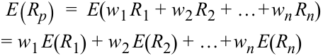
- Portfolio variance is affected by both the risk of the individual component assets and their combined risks together as measured by their covariance, which is defined as
- Phương sai của danh mục đầu tư chịu ảnh hưởng bởi cả rủi ro của từng tài sản thành phần riêng lẻ và rủi ro kết hợp của chúng cùng nhau được đo bằng hiệp phương sai, được định nghĩa là:
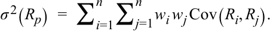
-
Covariance of returns can be negative (an average negative relationship between returns), zero if returns on the assets are unrelated, or positive (an average positive relationship between returns). Correlation, like covariance, measures linear association and ranges between –1 (strongly inverse) to +1 (strongly direct), with 0 indicating no relationship.
-
The covariance of portfolio returns can be estimated using a joint probability function of random variables. Defined on variables X and Y, as P(X,Y), which gives the probability of joint occurrences of their values. For example, P(X=3, Y=2), is the probability X equals 3 and Y equals 2.
-
A formula for computing the covariance between random variables RA and RB, such as the different assets of a portfolio, is
-
Hiệp phương sai của tỷ suất sinh lợi có thể mang dấu âm (mối quan hệ ngược chiều trung bình giữa các tỷ suất sinh lợi), bằng 0 nếu tỷ suất sinh lợi trên các tài sản không liên quan với nhau, hoặc mang dấu dương (mối quan hệ cùng chiều trung bình giữa các tỷ suất sinh lợi). Hệ số tương quan, giống như hiệp phương sai, đo lường mối liên hệ tuyến tính và nằm trong khoảng từ –1 (nghịch biến mạnh) đến +1 (đồng biến mạnh), với 0 biểu thị không có mối quan hệ tuyến tính.
-
Hiệp phương sai của tỷ suất sinh lợi danh mục đầu tư có thể được ước tính bằng cách sử dụng hàm xác suất đồng thời (joint probability function) của các biến ngẫu nhiên. Được định nghĩa trên hai biến $X$ và $Y$ là $P(X,Y)$, hàm này cho biết xác suất xảy ra đồng thời các giá trị của chúng. Ví dụ, $P(X=3, Y=2)$ là xác suất $X$ bằng 3 và $Y$ bằng 2.
-
Công thức tính hiệp phương sai giữa hai biến ngẫu nhiên $R_A$ và $R_B$, chẳng hạn như các tài sản khác nhau của một danh mục đầu tư, là:
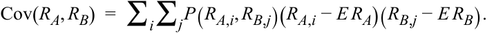
The value is derived by summing all possible deviation cross-products weighted by the appropriate joint probability.
Giá trị này được tính bằng cách cộng tất cả các tích chéo độ lệch có thể có được nhân trọng số với xác suất đồng thời tương ứng.
-
The joint probability function simplifies for independent variables, defined for two random variables X and Y if and only if P ( X,Y ) = P ( X ) P ( Y ). The expected value of the product of both independent and uncorrelated random variables is the product of their expected values.
-
An application of normal distribution theory to practical investment problems involves safety-first rules. These focus on reducing the shortfall risk, defined as portfolio value (or portfolio return) falling below some minimum acceptable level over some time horizon,
-
The safety-first ratio is defined as (SFRatio = [E(RP) − RL]/σP, where E(RP) is expected portfolio return, RL is a predetermined minimum threshold level for a variable of interest like portfolio return, and σP is portfolio standard deviation. When RL is the risk-free rate, the safety-first ratio is equivalent to the Sharpe ratio.
-
Roy’s safety-first criterion states that the optimal portfolio minimizes the probability that portfolio return, RP, will fall below RL. For a portfolio with a given safety-first ratio (SFratio), the probability that
-
Hàm xác suất đồng thời được đơn giản hóa đối với các biến độc lập (independent variables), được định nghĩa cho hai biến ngẫu nhiên $X$ và $Y$ khi và chỉ khi $P(X,Y) = P(X)P(Y)$. Giá trị kỳ vọng của tích của hai biến ngẫu nhiên độc lập cũng như không tương quan bằng tích các giá trị kỳ vọng của chúng.
-
Một ứng dụng của lý thuyết phân phối chuẩn vào các bài toán đầu tư thực tế liên quan đến các quy tắc an toàn trên hết (safety-first rules). Các quy tắc này tập trung vào việc giảm thiểu rủi ro thiếu hụt (shortfall risk), được định nghĩa là giá trị danh mục đầu tư (hoặc tỷ suất sinh lợi danh mục đầu tư) giảm xuống dưới một mức tối thiểu có thể chấp nhận được nào đó trong một khoảng thời gian nhất định.
-
Tỷ số an toàn trên hết (safety-first ratio) được định nghĩa là $\text{SFRatio} = [E(R_P) - R_L]/\sigma_P$, trong đó $E(R_P)$ là tỷ suất sinh lợi kỳ vọng của danh mục đầu tư, $R_L$ là mức ngưỡng tối thiểu được xác định trước cho một biến số quan tâm như tỷ suất sinh lợi danh mục đầu tư, và $\sigma_P$ là độ lệch chuẩn của danh mục đầu tư. Khi $R_L$ là lãi suất phi rủi ro, tỷ số an toàn trên hết tương đương với tỷ số Sharpe (Sharpe ratio).
-
Tiêu chuẩn an toàn trên hết của Roy (Roy’s safety-first criterion) phát biểu rằng danh mục đầu tư tối ưu sẽ tối thiểu hóa xác suất để tỷ suất sinh lợi của danh mục, $R_P$, giảm xuống dưới mức $R_L$. Đối với một danh mục đầu tư có tỷ số an toàn trên hết ($\text{SFRatio}$) cho trước, xác suất để
its return will be less than RL is Normal (–SFRatio), and the safety-first optimal portfolio has the lowest such probability. The criterion is implemented by first calculating each potential portfolio’s SFRatio and then choosing the portfolio with the highest SFRatio.
tỷ suất sinh lợi của nó nhỏ hơn $R_L$ là $\text{Normal}(-\text{SFRatio})$, và danh mục tối ưu theo tiêu chuẩn an toàn trên hết có xác suất đó thấp nhất. Tiêu chuẩn này được thực hiện bằng cách trước tiên tính $\text{SFRatio}$ của từng danh mục tiềm năng và sau đó chọn danh mục có $\text{SFRatio}$ cao nhất.
PORTFOLIO EXPECTED RETURN AND VARIANCE OF RETURN
TỶ SUẤT SINH LỢI KỲ VỌNG VÀ PHƯƠNG SAI TỶ SUẤT SINH LỢI CỦA DANH MỤC ĐẦU TƯ (PORTFOLIO EXPECTED RETURN AND VARIANCE OF RETURN)
2
2
calculate and interpret the expected value, variance, standard deviation, covariances, and correlations of portfolio returns
tính toán và diễn giải giá trị kỳ vọng, phương sai, độ lệch chuẩn, hiệp phương sai và hệ số tương quan của tỷ suất sinh lợi danh mục đầu tư
The expected return on the portfolio ( E ( Rp )) is a weighted average of the expected returns (R1 to Rn) on the component securities using their respective proportions of the portfolio in currency units as weights ( w1 to wn ):
Tỷ suất sinh lợi kỳ vọng của danh mục đầu tư (expected return on the portfolio – $E(R_p)$) là trung bình có trọng số của các tỷ suất sinh lợi kỳ vọng ($R_1$ đến $R_n$) trên các chứng khoán thành phần bằng cách sử dụng tỷ trọng tương ứng của chúng trong danh mục tính theo đơn vị tiền tệ làm trọng số ($w_1$ đến $w_n$):
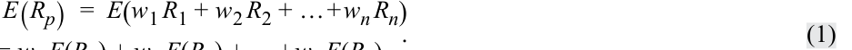
= w 1 E ( R 1) + w 2 E ( R 2) + … + wn E ( Rn ).
Suppose we have estimated expected returns on assets in the three-asset portfolio shown in Exhibit 1.
Giả sử chúng ta đã ước tính tỷ suất sinh lợi kỳ vọng trên các tài sản trong danh mục ba tài sản được thể hiện trong Bảng minh họa 1.
Exhibit 1: Weights and Expected Returns of Sample Portfolio
Bảng minh họa 1: Tỷ trọng và Tỷ suất sinh lợi Kỳ vọng của Danh mục Mẫu (Weights and Expected Returns of Sample Portfolio)
| Asset Class | Weight | Expected Return (%) |
|---|---|---|
| S&P 500 | 0.50 | 13 |
| US long-term corporate bonds | 0.25 | 6 |
| MSCI EAFE | 0.25 | 15 |
| Loại tài sản (Asset Class) | Tỷ trọng (Weight) | Tỷ suất sinh lợi kỳ vọng (Expected Return) (%) |
|---|---|---|
| S&P 500 | 0.50 | 13 |
| Trái phiếu doanh nghiệp dài hạn của Hoa Kỳ | 0.25 | 6 |
| MSCI EAFE | 0.25 | 15 |
We calculate the expected return on the portfolio as 11.75 percent:
Chúng ta tính được tỷ suất sinh lợi kỳ vọng của danh mục đầu tư là 11.75 phần trăm:
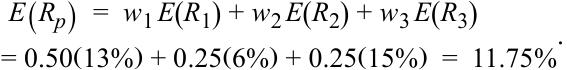
Here we are interested in portfolio variance of return as a measure of investment risk. Accordingly, portfolio variance is as follows:
Ở đây chúng ta quan tâm đến phương sai tỷ suất sinh lợi của danh mục đầu tư như một thước đo rủi ro đầu tư. Theo đó, phương sai danh mục đầu tư được tính như sau:
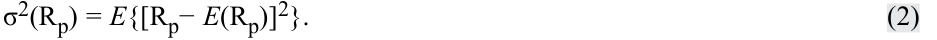
This is expected variance or variance in a forward-looking sense. To implement this definition of portfolio variance, we use information about the individual assets in the portfolio, but we also need the concept of covariance. To avoid notational clutter, we write ERp for E (Rp).
Đây là phương sai kỳ vọng hay phương sai theo nghĩa hướng tới tương lai (forward-looking). Để áp dụng định nghĩa về phương sai danh mục đầu tư này, chúng ta sử dụng thông tin về từng tài sản riêng lẻ trong danh mục, nhưng chúng ta cũng cần đến khái niệm hiệp phương sai. Để tránh sự rườm rà trong ký hiệu, chúng ta viết $ER_p$ thay cho $E(R_p)$.
Covariance
Hiệp phương sai (Covariance)
Given two random variables Ri and Rj, the covariance between Ri and Rj is as follows:
Cho hai biến ngẫu nhiên $R_i$ và $R_j$, hiệp phương sai (covariance) giữa $R_i$ và $R_j$ như sau:
Cov( Ri , Rj ) = E [( Ri − ERi )( Rj − ERj )]. ~~(3)~~
Alternative notations are σ(Ri,Rj) and σij. Equation 3 states that the covariance between two random variables is the probability-weighted average of the cross-products of each random variable’s deviation from its own expected value. The previous measure is the population covariance and is forward-looking. The sample covariance between two random variables Ri and Rj, based on a sample of past data of size n is as follows:
Các ký hiệu thay thế khác là $\sigma(R_i, R_j)$ và $\sigma_{ij}$. Phương trình 3 phát biểu rằng hiệp phương sai giữa hai biến ngẫu nhiên là trung bình có trọng số xác suất của các tích chéo giữa độ lệch của mỗi biến ngẫu nhiên so với giá trị kỳ vọng của chính nó. Thước đo trên là hiệp phương sai tổng thể và mang tính hướng tới tương lai. Hiệp phương sai mẫu (sample covariance) giữa hai biến ngẫu nhiên $R_i$ và $R_j$, dựa trên một mẫu dữ liệu quá khứ có kích thước $n$, như sau:
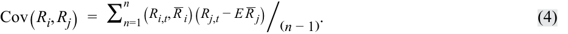
Start with the definition of variance for a three-asset portfolio and see how it decomposes into three variance terms and six covariance terms. Dispensing with the derivation, the result is Equation 5:
Hãy bắt đầu với định nghĩa về phương sai cho một danh mục gồm ba tài sản và xem cách nó phân rã thành ba số hạng phương sai và sáu số hạng hiệp phương sai. Bỏ qua bước biến đổi trung gian, kết quả là Phương trình 5:
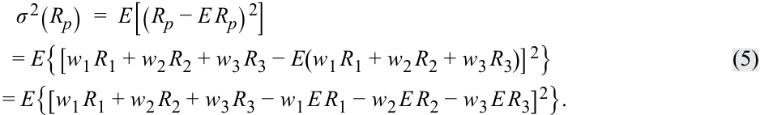
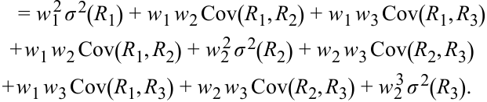
Noting that the order of variables in covariance does not matter, for example, Cov( R 2, R 1) = Cov( R 1, R 2), and that diagonal variance terms σ2 ( R 1), σ2 ( R 2), and σ2 ( R 3) can be expressed as Cov( R 1, R 1), Cov( R 2, R 2), and Cov( R 3, R 3), respectively, the most compact way to state Equation 5 is
Lưu ý rằng thứ tự của các biến số trong hiệp phương sai không quan trọng, ví dụ $\text{Cov}(R_2, R_1) = \text{Cov}(R_1, R_2)$, và các số hạng phương sai nằm trên đường chéo $\sigma^2(R_1), \sigma^2(R_2)$, và $\sigma^2(R_3)$ có thể được biểu diễn lần lượt là $\text{Cov}(R_1, R_1), \text{Cov}(R_2, R_2)$, và $\text{Cov}(R_3, R_3)$, cách viết gọn nhất cho Phương trình 5 là:
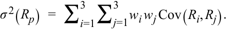
Moreover, this expression generalizes for a portfolio of any size n to
Hơn nữa, biểu thức này được tổng quát hóa cho một danh mục đầu tư có kích thước $n$ bất kỳ thành:
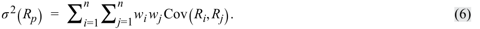
Equation 6 shows that individual variances of return constitute part, but not all, of portfolio variance. The three variances are outnumbered by the six covariance terms off the diagonal. If there are 20 assets, there are 20 variance terms and 20(20) − 20 = 380 off-diagonal covariance terms. A first observation is that as the number of holdings increases, covariance becomes increasingly important, all else equal.
Phương trình 6 cho thấy phương sai tỷ suất sinh lợi của từng tài sản riêng lẻ chỉ cấu thành một phần, chứ không phải toàn bộ, phương sai của danh mục đầu tư. Ba số hạng phương sai ít hơn nhiều so với sáu số hạng hiệp phương sai nằm ngoài đường chéo chính (off-diagonal). Nếu có 20 tài sản, sẽ có 20 số hạng phương sai và $20(20) - 20 = 380$ số hạng hiệp phương sai ngoài đường chéo chính. Nhận xét đầu tiên là khi số lượng tài sản nắm giữ tăng lên, hiệp phương sai ngày càng trở nên quan trọng hơn, khi các yếu tố khác không đổi.
The covariance terms capture how the co-movements of returns affect aggregate portfolio variance. From the definition of covariance, we can establish two essential observations about covariance.
Các số hạng hiệp phương sai nắm bắt cách thức sự đồng biến động (co-movements) của các tỷ suất sinh lợi ảnh hưởng đến tổng phương sai của danh mục đầu tư. Từ định nghĩa về hiệp phương sai, chúng ta có thể rút ra hai nhận xét thiết yếu về hiệp phương sai.
1. We can interpret the sign of covariance as follows:
1. Chúng ta có thể diễn giải dấu của hiệp phương sai như sau:
-
Covariance of returns is negative if, when the return on one asset is above its expected value, the return on the other asset tends to be below its expected value (an average inverse relationship between returns).
-
Covariance of returns is 0 if returns on the assets are unrelated.
-
Hiệp phương sai của tỷ suất sinh lợi mang dấu âm nếu, khi tỷ suất sinh lợi của một tài sản nằm trên giá trị kỳ vọng của nó, thì tỷ suất sinh lợi của tài sản kia có xu hướng nằm dưới giá trị kỳ vọng của nó (một mối quan hệ nghịch đảo trung bình giữa các tỷ suất sinh lợi).
-
Hiệp phương sai của tỷ suất sinh lợi bằng 0 nếu tỷ suất sinh lợi của các tài sản không có liên hệ với nhau.
-
Hiệp phương sai của tỷ suất sinh lợi mang dấu dương khi tỷ suất sinh lợi của cả hai tài sản có xu hướng nằm cùng một phía (cùng ở trên hoặc cùng ở dưới) so với giá trị kỳ vọng của chúng tại cùng một thời điểm (một mối quan hệ cùng chiều trung bình giữa các tỷ suất sinh lợi).
Covariance of returns is positive when the returns on both assets tend to be on the same side (above or below) their expected values at the same time (an average positive relationship between returns). The covariance of a random variable with itself ( own covariance ) is its own variance: Cov( R,R ) = E {[ RE ( R )][ RE ( R )]} = E {[ RE ( R )]2 } = σ2 ( R ).
2. Hiệp phương sai của một biến ngẫu nhiên với chính nó (tự hiệp phương sai – own covariance) chính là phương sai của nó: $\text{Cov}(R, R) = E\{[R - E(R)][R - E(R)]\} = E\{[R - E(R)]^2\} = \sigma^2(R)$.
Exhibit 2 summarizes the inputs for portfolio expected return (Panel A) and variance of return (Panel B). A complete list of the covariances constitutes all the statistical data needed to compute portfolio variance of return as shown in the covariance matrix in Panel B.
Bảng minh họa 2 tóm tắt các dữ liệu đầu vào cho tỷ suất sinh lợi kỳ vọng của danh mục đầu tư (Bảng A) và phương sai tỷ suất sinh lợi (Bảng B). Một danh sách đầy đủ các hiệp phương sai cấu thành toàn bộ dữ liệu thống kê cần thiết để tính phương sai tỷ suất sinh lợi của danh mục đầu tư như được thể hiện trong ma trận hiệp phương sai (covariance matrix) ở Bảng B.
Exhibit 2: Inputs to Portfolio Expected Return and Variance
Bảng minh họa 2: Các Dữ liệu Đầu vào cho Tỷ suất sinh lợi Kỳ vọng và Phương sai của Danh mục đầu tư (Inputs to Portfolio Expected Return and Variance)
| A. Inputs | to Portfolio Expected Retu | rn | |
|---|---|---|---|
| Asset | A | B | C |
| E(RA) | E(RB) | E(RC) | |
| B. Covaria | nce Matrix: The Inputs to | Portfolio Variance of Retu | rn |
| Asset | A | B | C |
| A | Cov(_R_A_R_A,_R_A_R_A) | Cov(_R_A,_R_B) | Cov(_R_A,_R_C) |
| B | Cov(_R_B,_R_A) | Cov(_R_B_R_B,_R_B_R_B) | Cov(_R_B,_R_C) |
| C | Cov(_R_C,_R_A) | Cov(_R_C,_R_B) | Cov(_R_C_R_C,_R_C_R_C) |
| A. Các dữ liệu đầu vào cho Tỷ suất sinh lợi Kỳ vọng của Danh mục (Inputs to Portfolio Expected Return) | |||
|---|---|---|---|
| Tài sản (Asset) | A | B | C |
| $E(R_A)$ | $E(R_B)$ | $E(R_C)$ | |
| B. Ma trận Hiệp phương sai: Các dữ liệu đầu vào cho Phương sai Tỷ suất sinh lợi của Danh mục (Covariance Matrix: The Inputs to Portfolio Variance of Return) | |||
| Tài sản (Asset) | A | B | C |
| A | $\text{Cov}(R_A, R_A)$ | $\text{Cov}(R_A, R_B)$ | $\text{Cov}(R_A, R_C)$ |
| B | $\text{Cov}(R_B, R_A)$ | $\text{Cov}(R_B, R_B)$ | $\text{Cov}(R_B, R_C)$ |
| C | $\text{Cov}(R_C, R_A)$ | $\text{Cov}(R_C, R_B)$ | $\text{Cov}(R_C, R_C)$ |
With three assets, the covariance matrix has 32 = 3 × 3 = 9 entries, but the diagonal terms, the variances (bolded in Exhibit 2), are treated separately from the off-diagonal terms. So, there are 9 − 3 = 6 covariances, excluding variances. But Cov( R B, R A) = Cov( R A, R B), Cov( R C, R A) = Cov( R A, R C), and Cov( R C, R B) = Cov( R B, R C). The covariance matrix below the diagonal is the mirror image of the covariance matrix above the diagonal, so you only need to use one (i.e., either below or above the diagonal). As a result, there are only 6/2 = 3 distinct covariance terms to estimate. In general, for n securities, there are n ( n − 1)/2 distinct covariances and n variances to estimate.
Với ba tài sản, ma trận hiệp phương sai có $3^2 = 3 \times 3 = 9$ phần tử, nhưng các số hạng trên đường chéo chính, tức các phương sai (được in đậm trong Bảng minh họa 2), được xử lý tách biệt với các số hạng ngoài đường chéo chính. Vì vậy, có $9 - 3 = 6$ hiệp phương sai, không tính các phương sai. Tuy nhiên, $\text{Cov}(R_B, R_A) = \text{Cov}(R_A, R_B)$, $\text{Cov}(R_C, R_A) = \text{Cov}(R_A, R_C)$, và $\text{Cov}(R_C, R_B) = \text{Cov}(R_B, R_C)$. Phần ma trận hiệp phương sai phía dưới đường chéo chính là hình ảnh phản chiếu qua gương của phần ma trận hiệp phương sai phía trên đường chéo chính, vì vậy bạn chỉ cần sử dụng một nửa (tức là phía dưới hoặc phía trên đường chéo chính). Do đó, chỉ có $6 / 2 = 3$ số hạng hiệp phương sai riêng biệt cần ước tính. Tổng quát, đối với $n$ chứng khoán, có $n(n - 1)/2$ hiệp phương sai riêng biệt và $n$ phương sai cần ước tính.
Suppose we have the covariance matrix shown in Exhibit 3 with returns expressed as a percentage. The table entries are shown as return percentages squared (%2 ). The terms 38%2 and 400%2 are 0.0038 and 0.0400, respectively, stated as decimals; the correct usage of percents and decimals leads to identical answers.
Giả sử chúng ta có ma trận hiệp phương sai được thể hiện trong Bảng minh họa 3 với tỷ suất sinh lợi được biểu thị dưới dạng phần trăm. Các phần tử trong bảng được hiển thị theo đơn vị phần trăm tỷ suất sinh lợi bình phương ($\%^2$). Các số hạng $38\%^2$ và $400\%^2$ lần lượt là 0.0038 và 0.0400 khi được viết dưới dạng số thập phân; việc sử dụng đúng nhất quán đơn vị phần trăm hoặc số thập phân sẽ dẫn đến kết quả hoàn toàn giống nhau.
Exhibit 3: Covariance Matrix
Bảng minh họa 3: Ma trận Hiệp phương sai (Covariance Matrix)
| US Long-Term | |||
|---|---|---|---|
| S&P 500 | Corporate Bonds | MSCI EAFE | |
| S&P 500 | 400 | 45 | 189 |
| US long-term corporate bonds | 45 | 81 | 38 |
| MSCI EAFE | 189 | 38 | 441 |
| S&P 500 | Trái phiếu doanh nghiệp dài hạn Hoa Kỳ (US Long-Term Corporate Bonds) | MSCI EAFE | |
|---|---|---|---|
| S&P 500 | 400 | 45 | 189 |
| Trái phiếu doanh nghiệp dài hạn Hoa Kỳ | 45 | 81 | 38 |
| MSCI EAFE | 189 | 38 | 441 |
Taking Equation 5 and grouping variance terms together produces the following:
Lấy Phương trình 5 và nhóm các số hạng phương sai lại với nhau sẽ cho ra kết quả sau:
σ2 ( Rp ) = w 12 σ2 ( R 1) + w 22 σ2 ( R 2) + w 23 σ2 ( R 3) + 2 w 1 w 2 Cov ( R 1 , R 2)
- 2 w 1 w 3 Cov ( R 1 , R 3) + 2 w 2 w 3 Cov ( R 2 , R 3) =( 0.50)2( 400) +( 0.25)2( 81) +( 0.25)2( 441) + 2( 0.50)( 0.25)( 45) + 2( 0.50)( 0.25)( 189) + 2( 0.25)( 0.25)( 38)
= 100 + 5.0625 + 27.5625 + 11.25 + 47.25 + 4.75 = 195.875.
The variance is 195.875. Standard deviation of return is 195.8751/2 = 14%. To summarize, the portfolio has an expected annual return of 11.75 percent and a standard deviation of return of 14 percent.
Phương sai là 195.875. Độ lệch chuẩn của tỷ suất sinh lợi là $195.875^{1/2} = 14\%$. Tóm lại, danh mục đầu tư có tỷ suất sinh lợi hàng năm kỳ vọng là 11.75 phần trăm và độ lệch chuẩn của tỷ suất sinh lợi là 14 phần trăm.
Looking at the first three terms in the calculation above, their sum (100 + 5.0625 + 27.5625) is 132.625, the contribution of the individual variances to portfolio variance. If the returns on the three assets were independent, covariances would be 0 and the standard deviation of portfolio return would be 132.6251/2 = 11.52 percent as compared to 14 percent before, so a less risky portfolio. If the covariance terms were negative, then a negative number would be added to 132.625, so portfolio variance and risk would be even smaller, while expected return would not change. For the same expected portfolio return, the portfolio has less risk. This risk reduction is a diversification benefit, meaning a risk-reduction benefit from holding a portfolio of assets. The diversification benefit increases with decreasing covariance. This observation is a key insight of modern portfolio theory. This insight is even more intuitively stated when we can use the concept of correlation.
Nhìn vào ba số hạng đầu tiên trong phép tính trên, tổng của chúng ($100 + 5.0625 + 27.5625$) là 132.625, chính là mức đóng góp của các phương sai riêng lẻ vào phương sai của danh mục đầu tư. Nếu tỷ suất sinh lợi của ba tài sản độc lập với nhau, các hiệp phương sai sẽ bằng 0 và độ lệch chuẩn của tỷ suất sinh lợi danh mục sẽ là $132.625^{1/2} = 11.52\%$ so với mức $14\%$ trước đó, tức là một danh mục ít rủi ro hơn. Nếu các số hạng hiệp phương sai mang dấu âm, thì một số âm sẽ được cộng vào 132.625, do đó phương sai và rủi ro của danh mục đầu tư sẽ còn nhỏ hơn nữa, trong khi tỷ suất sinh lợi kỳ vọng không thay đổi. Với cùng một mức tỷ suất sinh lợi kỳ vọng của danh mục, danh mục đó có rủi ro thấp hơn. Sự cắt giảm rủi ro này là lợi ích đa dạng hóa (diversification benefit), có nghĩa là lợi ích giảm thiểu rủi ro từ việc nắm giữ một danh mục các tài sản. Lợi ích đa dạng hóa tăng lên khi hiệp phương sai giảm xuống. Nhận xét này là một hiểu biết sâu sắc then chốt của lý thuyết danh mục đầu tư hiện đại. Hiểu biết này càng được diễn đạt trực quan hơn khi chúng ta sử dụng khái niệm hệ số tương quan.
Correlation
Hệ số Tương quan (Correlation)
The correlation between two random variables, Ri and Rj, is defined as follows: ρ(Ri,Rj) = Cov(Ri,Rj)/[σ(Ri)σ(Rj)]. ~~(7)~~
Hệ số tương quan (correlation) giữa hai biến ngẫu nhiên, $R_i$ và $R_j$, được định nghĩa như sau:
Alternative notations are Corr(Ri,Rj) and ρij.
Các ký hiệu thay thế khác là $\text{Corr}(R_i, R_j)$ và $\rho_{ij}$.
The above definition of correlation is forward-looking because it involves dividing the forward-looking covariance by the product of forward-looking standard deviations. Frequently, covariance is substituted out using the relationship Cov(Ri,Rj) = ρ(Ri,Rj) σ(Ri)σ(Rj). Like covariance, the correlation coefficient is a measure of linear association. However, the division in the definition makes correlation a pure number (without a unit of measurement) and places bounds on its largest and smallest possible values, which are +1 and –1, respectively.
Định nghĩa về hệ số tương quan ở trên mang tính hướng tới tương lai vì nó liên quan đến việc chia hiệp phương sai hướng tới tương lai cho tích của các độ lệch chuẩn hướng tới tương lai. Thông thường, hiệp phương sai được thay thế bằng mối quan hệ $\text{Cov}(R_i, R_j) = \rho(R_i, R_j)\sigma(R_i)\sigma(R_j)$. Giống như hiệp phương sai, hệ số tương quan là một thước đo mối liên hệ tuyến tính. Tuy nhiên, phép chia trong định nghĩa làm cho hệ số tương quan trở thành một con số thuần túy (không có đơn vị đo lường) và đặt ra các giới hạn cho giá trị lớn nhất và nhỏ nhất có thể có của nó, lần lượt là +1 và –1.
If two variables have a strong positive linear relation, then their correlation will be close to +1. If two variables have a strong negative linear relation, then their correlation will be close to –1. If two variables have a weak linear relation, then their correlation will be close to 0. Using the previous definition, we can state a correlation matrix from data in the covariance matrix alone. Exhibit 4 shows the correlation matrix.
Nếu hai biến số có mối quan hệ tuyến tính cùng chiều mạnh, thì hệ số tương quan của chúng sẽ gần bằng +1. Nếu hai biến số có mối quan hệ tuyến tính ngược chiều mạnh, thì hệ số tương quan của chúng sẽ gần bằng –1. Nếu hai biến số có mối quan hệ tuyến tính yếu, thì hệ số tương quan của chúng sẽ gần bằng 0. Sử dụng định nghĩa trước đó, chúng ta có thể thiết lập một ma trận tương quan (correlation matrix) chỉ từ dữ liệu trong ma trận hiệp phương sai. Bảng minh họa 4 thể hiện ma trận tương quan này.
Exhibit 4: Correlation Matrix of Returns
Bảng minh họa 4: Ma trận Tương quan của Tỷ suất sinh lợi (Correlation Matrix of Returns)
| S&P 500 | US Long-Term Cor- porate Bonds |
MSCI EAFE | |
|---|---|---|---|
| S&P 500 | 1.00 | 0.25 | 0.45 |
| US long-term corporate bonds | 0.25 | 1.00 | 0.20 |
| MSCI EAFE | 0.45 | 0.20 | 1.00 |
| S&P 500 | Trái phiếu doanh nghiệp dài hạn Hoa Kỳ (US Long-Term Corporate Bonds) | MSCI EAFE | |
|---|---|---|---|
| S&P 500 | 1.00 | 0.25 | 0.45 |
| Trái phiếu doanh nghiệp dài hạn Hoa Kỳ | 0.25 | 1.00 | 0.20 |
| MSCI EAFE | 0.45 | 0.20 | 1.00 |
For example, from Exhibit 3, we know the covariance between long-term bonds and MSCI EAFE is 38. The standard deviation of long-term bond returns is 811/2 = 9 percent, that of MSCI EAFE returns is 4411/2 = 21 percent, from diagonal terms in Exhibit 3. The correlation ρ( R long-term bonds, R EAFE) is 38/[(9%)(21%)] = 0.201, rounded to 0.20. The correlation of the S&P 500 with itself equals 1: The calculation is its own covariance divided by its standard deviation squared.
Ví dụ, từ Bảng minh họa 3, chúng ta biết hiệp phương sai giữa trái phiếu dài hạn và MSCI EAFE là 38. Độ lệch chuẩn của tỷ suất sinh lợi trái phiếu dài hạn là $81^{1/2} = 9\%$, và của tỷ suất sinh lợi MSCI EAFE là $441^{1/2} = 21\%$, lấy từ các số hạng trên đường chéo chính trong Bảng minh họa 3. Hệ số tương quan $\rho(R_{\text{trái phiếu dài hạn}}, R_{\text{EAFE}})$ là $38 / [(9\%)(21\%)] = 0.201$, làm tròn thành 0.20. Hệ số tương quan của S&P 500 với chính nó bằng 1: Phép tính là lấy tự hiệp phương sai của nó chia cho bình phương độ lệch chuẩn của chính nó.
EXAMPLE 1
VÍ DỤ 1
Portfolio Expected Return and Variance of Return with Varying Portfolio Weights
Tỷ suất sinh lợi Kỳ vọng và Phương sai Tỷ suất sinh lợi của Danh mục với các Tỷ trọng Danh mục Thay đổi (Portfolio Expected Return and Variance of Return with Varying Portfolio Weights)
Anna Cintara is constructing different portfolios from the following two stocks:
Anna Cintara đang xây dựng các danh mục đầu tư khác nhau từ hai cổ phiếu sau đây:
Exhibit 5: Description of Two-Stock Portfolio
Bảng minh họa 5: Mô tả Danh mục Hai Cổ phiếu (Description of Two-Stock Portfolio)
| Stock 1 | Stock 2 | ||
|---|---|---|---|
| Expected return | 4% | 8% | |
| Standard deviation | 6% | 15% | |
| Current portfolio weights | 0.40 | 0.60 | |
| Correlation between returns | 0.30 |
| Cổ phiếu 1 (Stock 1) | Cổ phiếu 2 (Stock 2) | ||
|---|---|---|---|
| Tỷ suất sinh lợi kỳ vọng (Expected return) | 4% | 8% | |
| Độ lệch chuẩn (Standard deviation) | 6% | 15% | |
| Tỷ trọng danh mục hiện tại (Current portfolio weights) | 0.40 | 0.60 | |
| Hệ số tương quan giữa các tỷ suất sinh lợi (Correlation between returns) | 0.30 |
- Calculate the covariance between the returns on the two stocks.
- Solution:
- Tính hiệp phương sai giữa tỷ suất sinh lợi của hai cổ phiếu.
- Lời giải:
The correlation between two stock returns is ρ(Ri,Rj) = Cov(Ri,Rj)/[σ(Ri) σ(Rj)], so the covariance is Cov(Ri,Rj) = ρ(Ri,Rj) σ(Ri) σ(Rj). For these two stocks, the covariance is Cov(R1,R2) = ρ(R1,R2) σ(R1) σ(R2) = 0.30 (6) (15) = 27.
Hệ số tương quan giữa tỷ suất sinh lợi của hai cổ phiếu là $\rho(R_i, R_j) = \text{Cov}(R_i, R_j) / [\sigma(R_i)\sigma(R_j)]$, do đó hiệp phương sai là $\text{Cov}(R_i, R_j) = \rho(R_i, R_j)\sigma(R_i)\sigma(R_j)$. Đối với hai cổ phiếu này, hiệp phương sai là $\text{Cov}(R_1, R_2) = \rho(R_1, R_2)\sigma(R_1)\sigma(R_2) = 0.30(6)(15) = 27$.
- What is the portfolio expected return and standard deviation if Cintara puts 100 percent of her investment in Stock 1 ( w 1 = 1.00 and w 2 = 0.00)? What is the portfolio expected return and standard deviation if Cintara puts 100 percent of her investment in Stock 2 ( w 1 = 0.00 and w 2 = 1.00)?
- Solution:
- Tỷ suất sinh lợi kỳ vọng và độ lệch chuẩn của danh mục là bao nhiêu nếu Cintara bỏ 100 phần trăm khoản đầu tư của mình vào Cổ phiếu 1 ($w_1 = 1.00$ và $w_2 = 0.00$)? Tỷ suất sinh lợi kỳ vọng và độ lệch chuẩn của danh mục là bao nhiêu nếu Cintara bỏ 100 phần trăm khoản đầu tư của mình vào Cổ phiếu 2 ($w_1 = 0.00$ và $w_2 = 1.00$)?
- Lời giải:
If the portfolio is 100 percent invested in Stock 1, the portfolio has an expected return of 4 percent and a standard deviation of 6 percent. If the portfolio is 100 percent invested in Stock 2, the portfolio has an expected return of 8 percent and a standard deviation of 15 percent.
Nếu danh mục được đầu tư 100 phần trăm vào Cổ phiếu 1, danh mục có tỷ suất sinh lợi kỳ vọng là 4 phần trăm và độ lệch chuẩn là 6 phần trăm. Nếu danh mục được đầu tư 100 phần trăm vào Cổ phiếu 2, danh mục có tỷ suất sinh lợi kỳ vọng là 8 phần trăm và độ lệch chuẩn là 15 phần trăm.
- What are the portfolio expected return and standard deviation using the current portfolio weights?
- Tỷ suất sinh lợi kỳ vọng và độ lệch chuẩn của danh mục khi sử dụng tỷ trọng danh mục hiện tại là bao nhiêu?
Solution:
Lời giải:
For the current 40/60 portfolio, the expected return is
Đối với danh mục tỷ trọng 40/60 hiện tại, tỷ suất sinh lợi kỳ vọng là:
- E (Rp) = w 1 E ( R 1) + (1 − w 1) E ( R 2) = 0.40(4%) + 0.60(8%) = 6.4%
The portfolio variance and standard deviation are as follows:
Phương sai và độ lệch chuẩn của danh mục như sau:
-
σ2 ( Rp ) = w 12 σ2 ( R 1) + w 22 σ2 ( R 2) + 2 w 1 w 2 Cov ( R 1 , R 2)
-
= (0.40) 2( 36) + (0.60) 2( 225) + 2( 0.40)( 0.60)( 27)
-
= 5.76 + 81 + 12.96 = 99.72 σ( Rp ) = 99.72½ = 9.99%
- Calculate the expected return and standard deviation of the portfolios when w 1 goes from 0.00 to 1.00 in 0.10 increments (and w 2 = 1 – w 1). Place the
- Tính tỷ suất sinh lợi kỳ vọng và độ lệch chuẩn của các danh mục khi $w_1$ thay đổi từ 0.00 đến 1.00 với bước nhảy 0.10 (và $w_2 = 1 - w_1$). Đặt các
results (stock weights, portfolio expected return, and portfolio standard deviation) in a table, and then sketch a graph of the results with the standard deviation on the horizontal axis and expected return on the vertical axis.
kết quả (tỷ trọng cổ phiếu, tỷ suất sinh lợi kỳ vọng của danh mục và độ lệch chuẩn của danh mục) vào một bảng, và sau đó phác thảo đồ thị của các kết quả với độ lệch chuẩn trên trục hoành và tỷ suất sinh lợi kỳ vọng trên trục tung.
Solution:
Lời giải:
The portfolio expected returns, variances, and standard deviations for the different sets of portfolio weights are given in the following table. Three of the rows are already computed in the solutions to 2 and 3, and the other rows are computed using the same expected return, variance, and standard deviation formulas as in the solution to 3:
Tỷ suất sinh lợi kỳ vọng, phương sai và độ lệch chuẩn của danh mục đầu tư ứng với các tập hợp tỷ trọng danh mục khác nhau được cho trong bảng sau. Ba hàng đã được tính trong lời giải của câu 2 và 3, và các hàng còn lại được tính bằng cách sử dụng cùng các công thức tỷ suất sinh lợi kỳ vọng, phương sai và độ lệch chuẩn như trong lời giải của câu 3:
| Stock 1 weight |
Stock 2 weight |
Expected return (%) |
Variance (%2) |
Standard devia- tion (%) |
|---|---|---|---|---|
| 1.00 | 0.00 | 4.00 | 36.00 | 6.00 |
| 0.90 | 0.10 | 4.40 | 36.27 | 6.02 |
| 0.80 | 0.20 | 4.80 | 40.68 | 6.38 |
| 0.70 | 0.30 | 5.20 | 49.23 | 7.02 |
| 0.60 | 0.40 | 5.60 | 61.92 | 7.87 |
| 0.50 | 0.50 | 6.00 | 78.75 | 8.87 |
| 0.40 | 0.60 | 6.40 | 99.72 | 9.99 |
| 0.30 | 0.70 | 6.80 | 124.83 | 11.17 |
| 0.20 | 0.80 | 7.20 | 154.08 | 12.41 |
| 0.10 | 0.90 | 7.60 | 187.47 | 13.69 |
| 0.00 | 1.00 | 8.00 | 225.00 | 15.00 |
| Tỷ trọng Cổ phiếu 1 (Stock 1 weight) | Tỷ trọng Cổ phiếu 2 (Stock 2 weight) | Tỷ suất sinh lợi kỳ vọng (Expected return) (%) | Phương sai (Variance) ($\%^2$) | Độ lệch chuẩn (Standard deviation) (%) |
|---|---|---|---|---|
| 1.00 | 0.00 | 4.00 | 36.00 | 6.00 |
| 0.90 | 0.10 | 4.40 | 36.27 | 6.02 |
| 0.80 | 0.20 | 4.80 | 40.68 | 6.38 |
| 0.70 | 0.30 | 5.20 | 49.23 | 7.02 |
| 0.60 | 0.40 | 5.60 | 61.92 | 7.87 |
| 0.50 | 0.50 | 6.00 | 78.75 | 8.87 |
| 0.40 | 0.60 | 6.40 | 99.72 | 9.99 |
| 0.30 | 0.70 | 6.80 | 124.83 | 11.17 |
| 0.20 | 0.80 | 7.20 | 154.08 | 12.41 |
| 0.10 | 0.90 | 7.60 | 187.47 | 13.69 |
| 0.00 | 1.00 | 8.00 | 225.00 | 15.00 |
The graph of the expected return and standard deviation follows:
Đồ thị của tỷ suất sinh lợi kỳ vọng và độ lệch chuẩn như sau:
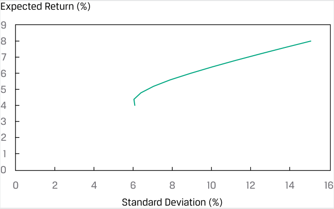
Chú thích hình ảnh: - Trục tung: Tỷ suất sinh lợi kỳ vọng (Expected Return (%)) từ 0 đến 9. - Trục hoành: Độ lệch chuẩn (Standard Deviation (%)) từ 0 đến 16.
QUESTION SET
BỘ CÂU HỎI (QUESTION SET)
- US and Spanish bonds returns measured in the same currency units have standard deviations of 0.64 and 0.56, respectively. If the correlation between the two bonds is 0.24, the covariance of returns is closest to:
-
A. 0.086.
-
B. 0.335.
- Tỷ suất sinh lợi trái phiếu của Hoa Kỳ và Tây Ban Nha được đo bằng cùng một đơn vị tiền tệ có độ lệch chuẩn lần lượt là 0.64 và 0.56. Nếu hệ số tương quan giữa hai trái phiếu là 0.24, thì hiệp phương sai của tỷ suất sinh lợi gần nhất với:
-
A. 0.086.
-
B. 0.335.
-
C. 0.390.
-
Solution:
-
C. 0.390.
-
Lời giải:
A là đáp án đúng. Hiệp phương sai là tích của các độ lệch chuẩn và hệ số tương quan sử dụng công thức $\text{Cov}(\text{tỷ suất sinh lợi trái phiếu Hoa Kỳ}, \text{tỷ suất sinh lợi trái phiếu Tây Ban Nha}) = \sigma(\text{trái phiếu Hoa Kỳ}) \times \sigma(\text{trái phiếu Tây Ban Nha}) \times \rho(\text{tỷ suất sinh lợi trái phiếu Hoa Kỳ}, \text{tỷ suất sinh lợi trái phiếu Tây Ban Nha}) = 0.64 \times 0.56 \times 0.24 = 0.086$.
A is correct. The covariance is the product of the standard deviations and correlation using the formula Cov(US bond returns, Spanish bond returns) = σ(US bonds) × σ (Spanish bonds) × ρ(US bond returns, Spanish bond returns) = 0.64 × 0.56 × 0.24 = 0.086.
- Hiệp phương sai của tỷ suất sinh lợi mang dấu dương khi tỷ suất sinh lợi của hai tài sản có xu hướng:
-
A. có cùng giá trị kỳ vọng.
-
B. nằm trên giá trị kỳ vọng của chúng tại các thời điểm khác nhau.
-
C. nằm cùng một phía so với giá trị kỳ vọng của chúng tại cùng một thời điểm.
-
Lời giải:
- The covariance of returns is positive when the returns on two assets tend to:
-
A. have the same expected values.
-
B. be above their expected value at different times.
-
C. be on the same side of their expected value at the same time.
-
Solution:
-
C is correct. The covariance of returns is positive when the returns on both assets tend to be on the same side (above or below) their expected values at the same time, indicating an average positive relationship between returns.
- Which of the following correlation coefficients indicates the weakest linear relationship between two variables?
-
A. –0.67
-
B. –0.24
-
C. 0.33
C là đáp án đúng. Hiệp phương sai của tỷ suất sinh lợi mang dấu dương khi tỷ suất sinh lợi của cả hai tài sản có xu hướng nằm cùng một phía (cùng ở trên hoặc cùng ở dưới) so với giá trị kỳ vọng của chúng tại cùng một thời điểm, cho thấy một mối quan hệ cùng chiều trung bình giữa các tỷ suất sinh lợi.
- Hệ số tương quan nào sau đây cho biết mối quan hệ tuyến tính yếu nhất giữa hai biến số?
-
A. –0.67
-
B. –0.24
-
C. 0.33
Solution:
Lời giải:
B is correct. Correlations near +1 exhibit strong positive linearity, whereas correlations near –1 exhibit strong negative linearity. A correlation of 0 indicates an absence of any linear relationship between the variables. The closer the correlation is to 0, the weaker the linear relationship.
B là đáp án đúng. Các hệ số tương quan gần +1 thể hiện tính tuyến tính dương mạnh, trong khi các hệ số tương quan gần –1 thể hiện tính tuyến tính âm mạnh. Hệ số tương quan bằng 0 cho biết sự vắng mặt của bất kỳ mối quan hệ tuyến tính nào giữa các biến số. Hệ số tương quan càng gần 0 thì mối quan hệ tuyến tính càng yếu.
- An analyst develops the following covariance matrix of returns:
- Một chuyên viên phân tích lập ma trận hiệp phương sai của tỷ suất sinh lợi như sau:
| Hedge Fund | Market Index | |
|---|---|---|
| Hedge fund | 256 | 110 |
| Market index | 110 | 81 |
| Quỹ Phòng hộ (Hedge Fund) | Chỉ số Thị trường (Market Index) | |
|---|---|---|
| Quỹ phòng hộ (Hedge fund) | 256 | 110 |
| Chỉ số thị trường (Market index) | 110 | 81 |
The correlation of returns between the hedge fund and the market index is closest to:
Hệ số tương quan của tỷ suất sinh lợi giữa quỹ phòng hộ và chỉ số thị trường gần nhất với:
-
A. 0.005.
-
B. 0.073.
-
C. 0.764.
-
A. 0.005.
-
B. 0.073.
-
C. 0.764.
Solution:
Lời giải:
C is correct. The correlation between two random variables Ri and Rj is defined as ρ(Ri,Rj) = Cov(Ri,Rj)/[σ(Ri)σ(Rj)]. Using the subscript i to represent hedge funds and the subscript j to represent the market index, the standard deviations are σ(Ri) = 2561/2 = 16 and σ(Rj) = 811/2 = 9. Thus, ρ(Ri,Rj) = Cov(Ri,Rj)/[σ(Ri) σ(Rj)] = 110/(16 × 9) = 0.764.
- All else being equal, as the correlation between two assets approaches +1.0, the diversification benefits:
C là đáp án đúng. Hệ số tương quan giữa hai biến ngẫu nhiên $R_i$ và $R_j$ được định nghĩa là $\rho(R_i, R_j) = \text{Cov}(R_i, R_j) / [\sigma(R_i)\sigma(R_j)]$. Sử dụng chỉ số dưới $i$ để đại diện cho quỹ phòng hộ và chỉ số dưới $j$ để đại diện cho chỉ số thị trường, các độ lệch chuẩn là $\sigma(R_i) = 256^{1/2} = 16$ và $\sigma(R_j) = 81^{1/2} = 9$. Do đó, $\rho(R_i, R_j) = \text{Cov}(R_i, R_j) / [\sigma(R_i)\sigma(R_j)] = 110 / (16 \times 9) = 0.764$.
A. decrease.
- Khi các yếu tố khác không đổi, khi hệ số tương quan giữa hai tài sản tiến gần đến +1.0, lợi ích đa dạng hóa (diversification benefits) sẽ:
- A. giảm xuống.
-
B. stay the same.
-
C. increase.
-
Solution:
-
B. giữ nguyên.
-
C. tăng lên.
-
Lời giải:
A là đáp án đúng. Khi hệ số tương quan giữa hai tài sản tiến gần đến +1, lợi ích đa dạng hóa sẽ giảm xuống. Nói cách khác, hệ số tương quan dương ngày càng tăng cho thấy mối quan hệ tuyến tính cùng chiều ngày càng mạnh và lợi ích đa dạng hóa ngày càng ít đi.
A is correct. As the correlation between two assets approaches +1, diversification benefits decrease. In other words, an increasingly positive correlation indicates an increasingly strong positive linear relationship and fewer diversification benefits.
- Cho một danh mục gồm năm cổ phiếu, cần bao nhiêu số hạng hiệp phương sai riêng biệt (duy nhất), không tính các phương sai, để tính phương sai tỷ suất sinh lợi của danh mục đầu tư?
-
A. 10
-
B. 20
-
C. 25
-
Lời giải:
A là đáp án đúng. Một ma trận hiệp phương sai cho năm cổ phiếu có $5 \times 5 = 25$ phần tử. Trừ đi 5 số hạng phương sai trên đường chéo chính sẽ còn lại 20 phần tử ngoài đường chéo chính. Bởi vì ma trận hiệp phương sai có tính đối xứng, nên chỉ có 10 phần tử là duy nhất ($20 / 2 = 10$).
- Phát biểu nào sau đây là chính xác nhất? Nếu hiệp phương sai của tỷ suất sinh lợi giữa hai tài sản là 0.0023, thì:
-
A. rủi ro của các tài sản gần bằng không.
-
B. tỷ suất sinh lợi của các tài sản không có liên hệ với nhau.
-
C. tỷ suất sinh lợi của các tài sản có mối quan hệ cùng chiều (dương).
-
Lời giải:
- Given a portfolio of five stocks, how many unique covariance terms, excluding variances, are required to calculate the portfolio return variance?
-
A. 10
-
B. 20
-
C. 25
-
Solution:
-
A is correct. A covariance matrix for five stocks has 5 × 5 = 25 entries. Subtracting the 5 diagonal variance terms results in 20 off-diagonal entries. Because a covariance matrix is symmetrical, only 10 entries are unique (20/2 = 10).
- Which of the following statements is most accurate? If the covariance of returns between two assets is 0.0023, then the:
-
A. assets’ risk is near zero.
-
B. asset returns are unrelated.
-
C. asset returns have a positive relationship.
-
Solution:
-
C is correct. The covariance of returns is positive when the returns on both assets tend to be on the same side (above or below) their expected values at the same time.
- A two-stock portfolio includes stocks with the following characteristics:
C là đáp án đúng. Hiệp phương sai của tỷ suất sinh lợi mang dấu dương khi tỷ suất sinh lợi của cả hai tài sản có xu hướng nằm cùng một phía (cùng ở trên hoặc cùng ở dưới) so với giá trị kỳ vọng của chúng tại cùng một thời điểm.
- Một danh mục gồm hai cổ phiếu bao gồm các cổ phiếu có các đặc điểm sau:
| Stock 1 | Stock 2 | ||
|---|---|---|---|
| Expected return | 7% | 10% | |
| Standard deviation | 12% | 25% | |
| Portfolio weights | 0.30 | 0.70 | |
| Correlation | 0.20 |
| Cổ phiếu 1 (Stock 1) | Cổ phiếu 2 (Stock 2) | ||
|---|---|---|---|
| Tỷ suất sinh lợi kỳ vọng (Expected return) | 7% | 10% | |
| Độ lệch chuẩn (Standard deviation) | 12% | 25% | |
| Tỷ trọng danh mục (Portfolio weights) | 0.30 | 0.70 | |
| Hệ số tương quan (Correlation) | 0.20 |
What is the standard deviation of portfolio returns?
Độ lệch chuẩn của tỷ suất sinh lợi danh mục đầu tư là bao nhiêu?
-
A. 14.91 percent
-
B. 18.56 percent
-
C. 21.10 percent
-
Solution:
-
A. 14.91 phần trăm
-
B. 18.56 phần trăm
-
C. 21.10 phần trăm
-
Lời giải:
B is correct. The covariance between the returns for the two stocks is Cov(R1,R2) = ρ(R1,R2) σ(R1) σ(R2) = 0.20 (12) (25) = 60. The portfolio variance is
B là đáp án đúng. Hiệp phương sai giữa tỷ suất sinh lợi của hai cổ phiếu là $\text{Cov}(R_1, R_2) = \rho(R_1, R_2)\sigma(R_1)\sigma(R_2) = 0.20(12)(25) = 60$. Phương sai của danh mục đầu tư là:
σ2 ( Rp ) = w 12 σ2 ( R 1) + w 22 σ2 ( R 2) + 2 w 1 w 2 Cov ( R 1 , R 2) =( 0.30)2( 12)2 +( 0.70)2( 25)2 + 2( 0.30)( 0.70)( 60) = 12.96 + 306.25 + 25.2 = 344.41.
The portfolio standard deviation is σ2 ( Rp ) = 344.41½ = 18.56%.
9. Lena Hunziger has designed the following three-asset portfolio:
Độ lệch chuẩn của danh mục đầu tư là $\sigma(R_p) = 344.41^{1/2} = 18.56\%$.
| Asset 1 | Asset 2 | Asset 3 | |
|---|---|---|---|
| Expected return | 5% | 6% | 7% |
| Portfolio weight | 0.20 | 0.30 | 0.50 |
- Lena Hunziger đã thiết kế danh mục ba tài sản sau đây:
Variance-Covariance Matrix
| Tài sản 1 (Asset 1) | Tài sản 2 (Asset 2) | Tài sản 3 (Asset 3) | |
|---|---|---|---|
| Tỷ suất sinh lợi kỳ vọng (Expected return) | 5% | 6% | 7% |
| Tỷ trọng danh mục (Portfolio weight) | 0.20 | 0.30 | 0.50 |
| Asset 1 | Asset 2 | Asset 3 | |
|---|---|---|---|
| Asset 1 | 196 | 105 | 140 |
| Asset 2 | 105 | 225 | 150 |
| Asset 3 | 140 | 150 | 400 |
Ma trận Phương sai-Hiệp phương sai (Variance-Covariance Matrix)
Hunziger estimated the portfolio return to be 6.3 percent. What is the portfolio standard deviation?
| Tài sản 1 (Asset 1) | Tài sản 2 (Asset 2) | Tài sản 3 (Asset 3) | |
|---|---|---|---|
| Tài sản 1 | 196 | 105 | 140 |
| Tài sản 2 | 105 | 225 | 150 |
| Tài sản 3 | 140 | 150 | 400 |
A. 13.07 percent
Hunziger ước tính tỷ suất sinh lợi của danh mục đầu tư là 6.3 phần trăm. Độ lệch chuẩn của danh mục đầu tư là bao nhiêu?
B. 13.88 percent
C. 14.62 percent
-
A. 13.07 phần trăm
-
B. 13.88 phần trăm
-
C. 14.62 phần trăm
-
Lời giải:
Solution:
C là đáp án đúng. Đối với danh mục gồm ba tài sản, phương sai của danh mục đầu tư là:
C is correct. For a three-asset portfolio, the portfolio variance is
-
σ2 ( Rp ) = w 12 σ2 ( R 1) + w 22 σ2 ( R 2) + w 32 σ2 ( R 3) + 2 w 1 w 2 Cov ( R 1 , R 2)
-
- 2 w 1 w 3 Cov ( R 1 , R 3) + 2 w 2 w 3 Cov ( R 2 , R 3)
=( 0.20)2( 196) +( 0.30)2( 225) +( 0.50)2( 400) + 2( 0.20)( 0.30)( 105) + 2( 0.20)( 0.50)( 140) + 2( 0.30)( 0.50)( 150) = 7.84 + 20.25 + 100 + 12.6 + 28 + 45 = 213.69.
The portfolio standard deviation is
Độ lệch chuẩn của danh mục đầu tư là:
σ2 ( Rp ) = 213.691/2 = 14.62% .
FORECASTING CORRELATION OF RETURNS: COVARIANCE GIVEN A JOINT PROBABILITY FUNCTION
DỰ BÁO HỆ SỐ TƯƠNG QUAN CỦA TỶ SUẤT SINH LỢI: HIỆP PHƯƠNG SAI KHI BIẾT HÀM XÁC SUẤT ĐỒNG THỜI (FORECASTING CORRELATION OF RETURNS: COVARIANCE GIVEN A JOINT PROBABILITY FUNCTION)
3
3
calculate and interpret the covariance and correlation of portfolio returns using a joint probability function for returns
tính toán và diễn giải hiệp phương sai và hệ số tương quan của tỷ suất sinh lợi danh mục đầu tư bằng cách sử dụng hàm xác suất đồng thời của tỷ suất sinh lợi
How do we estimate return covariance and correlation? Frequently, we make forecasts on the basis of historical covariance or use other methods such as a market model regression based on historical return data. We can also calculate covariance using the joint probability function of the random variables, if that can be estimated. The joint probability function of two random variables X and Y , denoted P ( X,Y ), gives the probability of joint occurrences of values of X and Y . For example, P ( X =3, Y =2), is the probability that X equals 3 and Y equals 2.
Làm thế nào để chúng ta ước tính hiệp phương sai và hệ số tương quan của tỷ suất sinh lợi? Thông thường, chúng ta đưa ra các dự báo trên cơ sở hiệp phương sai lịch sử hoặc sử dụng các phương pháp khác chẳng hạn như hồi quy mô hình thị trường (market model regression) dựa trên dữ liệu tỷ suất sinh lợi lịch sử. Chúng ta cũng có thể tính hiệp phương sai bằng cách sử dụng hàm xác suất đồng thời (joint probability function) của các biến ngẫu nhiên, nếu hàm đó có thể được ước tính. Hàm xác suất đồng thời của hai biến ngẫu nhiên $X$ và $Y$, được ký hiệu là $P(X,Y)$, cho biết xác suất xảy ra đồng thời các giá trị của $X$ và $Y$. Ví dụ, $P(X=3, Y=2)$ là xác suất $X$ bằng 3 và $Y$ bằng 2.
Suppose that the joint probability function of the returns on BankCorp stock (RA) and the returns on NewBank stock (RB) has the simple structure given in Exhibit 6.
Giả sử rằng hàm xác suất đồng thời của tỷ suất sinh lợi trên cổ phiếu BankCorp ($R_A$) và tỷ suất sinh lợi trên cổ phiếu NewBank ($R_B$) có cấu trúc đơn giản được cho trong Bảng minh họa 6.
Exhibit 6: Joint Probability Function of BankCorp and NewBank Returns (Entries Are Joint Probabilities)
Bảng minh họa 6: Hàm Xác suất Đồng thời của Tỷ suất sinh lợi BankCorp và NewBank (Các phần tử trong bảng là Xác suất Đồng thời) (Joint Probability Function of BankCorp and NewBank Returns (Entries Are Joint Probabilities))
| RB = 20% | RB = 16% | RB = 10% | |
|---|---|---|---|
| RA= 25% | 0.20 | 0 | 0 |
| RA= 12% | 0 | 0.50 | 0 |
| RA= 10% | 0 | 0 | 0.30 |
| $R_B = 20\%$ | $R_B = 16\%$ | $R_B = 10\%$ | |
|---|---|---|---|
| $R_A = 25\%$ | 0.20 | 0 | 0 |
| $R_A = 12\%$ | 0 | 0.50 | 0 |
| $R_A = 10\%$ | 0 | 0 | 0.30 |
The expected return on BankCorp stock is 0.20(25%) + 0.50(12%) + 0.30(10%) = 14%. The expected return on NewBank stock is 0.20(20%) + 0.50(16%) + 0.30(10%) = 15%. The joint probability function above might reflect an analysis based on whether banking industry conditions are good, average, or poor. Exhibit 7 presents the calculation of covariance.
Tỷ suất sinh lợi kỳ vọng trên cổ phiếu BankCorp là $0.20(25\%) + 0.50(12\%) + 0.30(10\%) = 14\%$. Tỷ suất sinh lợi kỳ vọng trên cổ phiếu NewBank là $0.20(20\%) + 0.50(16\%) + 0.30(10\%) = 15\%$. Hàm xác suất đồng thời ở trên có thể phản ánh một phân tích dựa trên việc điều kiện ngành ngân hàng là tốt (good), trung bình (average), hay kém (poor). Bảng minh họa 7 trình bày phép tính hiệp phương sai.
Exhibit 7: Covariance Calculations
Bảng minh họa 7: Các Phép tính Hiệp phương sai (Covariance Calculations)
| Banking Industry Condition |
Deviations BankCorp |
Deviations NewBank |
Product of Deviations |
Probability of Condition |
Probabili- ty-Weighted Product |
|---|---|---|---|---|---|
| Good | 25−14 | 20−15 | 55 | 0.20 | 11 |
| Average | 12−14 | 16−15 | −2 | 0.50 | −1 |
| Poor | 10−14 | 10−15 | 20 | 0.30 | 6 Cov(RA,RB) = 16 |
| Điều kiện ngành ngân hàng (Banking Industry Condition) | Độ lệch của BankCorp (Deviations BankCorp) | Độ lệch của NewBank (Deviations NewBank) | Tích các độ lệch (Product of Deviations) | Xác suất của điều kiện (Probability of Condition) | Tích có trọng số xác suất (Probability-Weighted Product) |
|---|---|---|---|---|---|
| Tốt (Good) | $25 - 14$ | $20 - 15$ | 55 | 0.20 | 11 |
| Trung bình (Average) | $12 - 14$ | $16 - 15$ | −2 | 0.50 | −1 |
| Kém (Poor) | $10 - 14$ | $10 - 15$ | 20 | 0.30 | 6 $\text{Cov}(R_A, R_B) = 16$ |
Note: Expected return for BankCorp is 14% and for NewBank, 15%.
Lưu ý: Tỷ suất sinh lợi kỳ vọng của BankCorp là 14% và của NewBank là 15%.
The first and second columns of numbers show, respectively, the deviations of BankCorp and NewBank returns from their mean or expected value. The next column shows the product of the deviations. For example, for good industry conditions, (25 − 14)(20 − 15) = 11(5) = 55. Then, 55 is multiplied or weighted by 0.20, the probability that banking industry conditions are good: 55(0.20) = 11. The calculations for average and poor banking conditions follow the same pattern. Summing up these probability-weighted products, we find Cov(RA,RB) = 16.
Cột số thứ nhất và thứ hai thể hiện lần lượt các độ lệch của tỷ suất sinh lợi BankCorp và NewBank so với giá trị trung bình hay giá trị kỳ vọng của chúng. Cột tiếp theo thể hiện tích của các độ lệch đó. Ví dụ, đối với điều kiện ngành tốt, $(25 - 14)(20 - 15) = 11(5) = 55$. Sau đó, 55 được nhân hay tính trọng số với 0.20, tức xác suất điều kiện ngành ngân hàng là tốt: $55(0.20) = 11$. Các phép tính cho điều kiện ngành ngân hàng trung bình và kém tuân theo quy trình tương tự. Cộng các tích có trọng số xác suất này lại, chúng ta tìm được $\text{Cov}(R_A, R_B) = 16$.
A formula for computing the covariance between random variables RA and RB is
Công thức tính hiệp phương sai giữa hai biến ngẫu nhiên $R_A$ và $R_B$ là:
Cov ( RA , RB ) = ∑ i ∑ j P ( RA , i , RB , j )( RA , i − E RA )( RB , j − E RB ) . ~~(8)~~
The formula tells us to sum all possible deviation cross-products weighted by the appropriate joint probability.
Công thức này cho chúng ta biết cần cộng tất cả các tích chéo độ lệch có thể có được nhân trọng số với xác suất đồng thời thích hợp.
Next, we take note of the fact that when two random variables are independent, their joint probability function simplifies.
Tiếp theo, chúng ta lưu ý thực tế rằng khi hai biến ngẫu nhiên độc lập với nhau, hàm xác suất đồng thời của chúng sẽ được đơn giản hóa.
Two random variables X and Y are independent if and only if P ( X,Y ) = P ( X ) P ( Y ).
Hai biến ngẫu nhiên $X$ và $Y$ độc lập (independent) khi và chỉ khi $P(X,Y) = P(X)P(Y)$.
For example, given independence, P (3,2) = P (3) P (2). We multiply the individual probabilities to get the joint probabilities. Independence is a stronger property than uncorrelatedness because correlation addresses only linear relationships. The following condition holds for independent random variables and, therefore, also holds for uncorrelated random variables.
Ví dụ, nếu độc lập với nhau, $P(3,2) = P(3)P(2)$. Chúng ta nhân các xác suất riêng lẻ lại để có được các xác suất đồng thời. Tính độc lập (Independence) là một tính chất mạnh hơn tính không tương quan (uncorrelatedness) bởi vì tương quan chỉ đề cập đến các mối quan hệ tuyến tính. Điều kiện sau đây luôn đúng với các biến ngẫu nhiên độc lập và do đó cũng đúng với các biến ngẫu nhiên không tương quan:
The expected value of the product of uncorrelated random variables is the product of their expected values.
Giá trị kỳ vọng của tích các biến ngẫu nhiên không tương quan bằng tích các giá trị kỳ vọng của chúng.
E ( XY ) = E ( X ) E ( Y ) if X and Y are uncorrelated.
Many financial variables, such as revenue (price times quantity), are the product of random quantities. When applicable, the previous rule simplifies the calculation of the expected value of a product of random variables.
Nhiều biến số tài chính, chẳng hạn như doanh thu (giá nhân với sản lượng), là tích của các đại lượng ngẫu nhiên. Khi có thể áp dụng, quy tắc trên giúp đơn giản hóa việc tính toán giá trị kỳ vọng của một tích các biến ngẫu nhiên.
EXAMPLE 2
VÍ DỤ 2
Covariances and Correlations of Security Returns
Hiệp phương sai và Hệ số Tương quan của Tỷ suất sinh lợi Chứng khoán (Covariances and Correlations of Security Returns)
Isabel Vasquez is reviewing the correlations between four of the asset classes in her company portfolio. In Exhibit 8, she plots 24 recent monthly returns for large-cap US stocks versus for large-cap world ex-US stocks (Panel 1) and the 24 monthly returns for intermediate-term corporate bonds versus long-term corporate bonds (Panel 2). Vasquez presents the returns, variances, and covariances in decimal form instead of percentage form. Note the different ranges of their vertical axes (Return %).
Isabel Vasquez đang xem xét các hệ số tương quan giữa bốn loại tài sản trong danh mục đầu tư của công ty cô. Trong Bảng minh họa 8, cô vẽ đồ thị 24 mức tỷ suất sinh lợi hàng tháng gần đây của cổ phiếu vốn hóa lớn Hoa Kỳ so với cổ phiếu vốn hóa lớn thế giới không bao gồm Hoa Kỳ (Hình A) và 24 mức tỷ suất sinh lợi hàng tháng của trái phiếu doanh nghiệp trung hạn so với trái phiếu doanh nghiệp dài hạn (Hình B). Vasquez trình bày các mức tỷ suất sinh lợi, phương sai và hiệp phương sai dưới dạng số thập phân thay vì dạng phần trăm. Lưu ý các khoảng giá trị trên trục tung (Tỷ suất sinh lợi %).
Exhibit 8: Monthly Returns for Four Asset Classes
Bảng minh họa 8: Tỷ suất sinh lợi Hàng tháng của Bốn Loại Tài sản (Monthly Returns for Four Asset Classes)
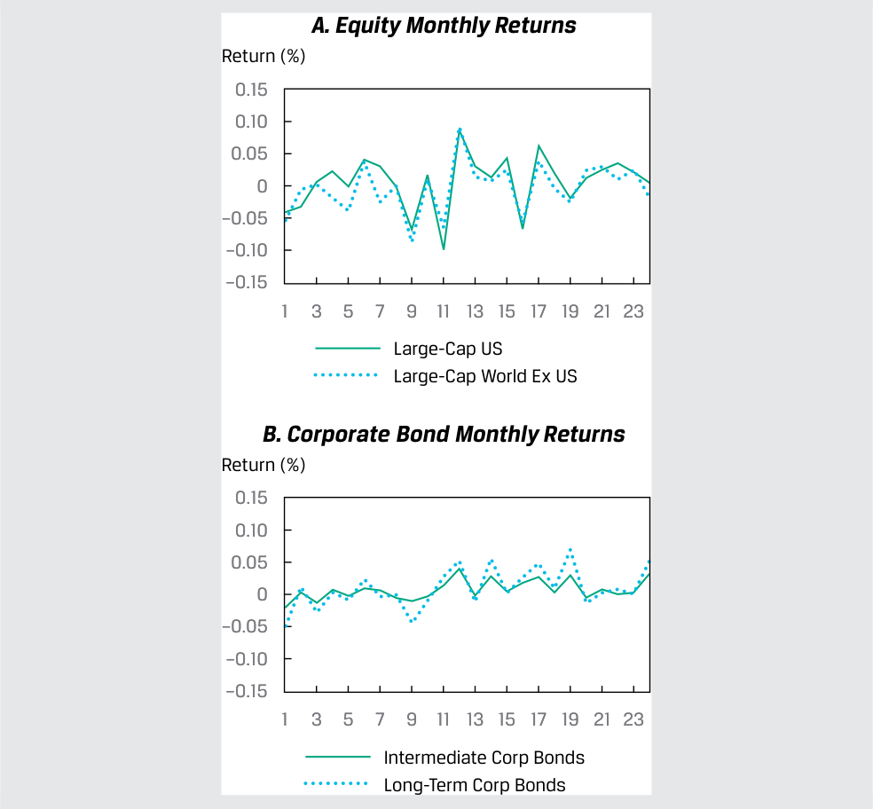
Chú thích hình ảnh: - A. Equity Monthly Returns (Tỷ suất sinh lợi hàng tháng của Cổ phiếu): Cổ phiếu vốn hóa lớn Hoa Kỳ (Large-Cap US) và Cổ phiếu vốn hóa lớn thế giới trừ Hoa Kỳ (Large-Cap World Ex US). - B. Corporate Bond Monthly Returns (Tỷ suất sinh lợi hàng tháng của Trái phiếu doanh nghiệp): Trái phiếu doanh nghiệp trung hạn (Intermediate Corp Bonds) và Trái phiếu doanh nghiệp dài hạn (Long-Term Corp Bonds).
- Selected data for the four asset classes are shown in Exhibit 9.
- Dữ liệu chọn lọc cho bốn loại tài sản được thể hiện trong Bảng minh họa 9.
Exhibit 9: Selected Data for Four Asset Classes
Bảng minh họa 9: Dữ liệu Chọn lọc cho Bốn Loại Tài sản (Selected Data for Four Asset Classes)
| Asset Classes | Large-Cap US Equities |
World (ex US) Equities |
Intermediate Corp Bonds |
Long-Term Corp Bonds |
|---|---|---|---|---|
| Variance | 0.001736 | 0.001488 | 0.000174 | 0.000699 |
| Standard deviation |
0.041668 | 0.038571 | 0.013180 | 0.026433 |
| Covariance | 0.00 | 1349 | 0.0003 | 18 |
| Correlation | 0.87 | 553 | 0.951 | 33 |
| Các loại tài sản (Asset Classes) | Cổ phiếu vốn hóa lớn Hoa Kỳ (Large-Cap US Equities) | Cổ phiếu Thế giới (trừ Hoa Kỳ) (World (ex US) Equities) | Trái phiếu doanh nghiệp trung hạn (Intermediate Corp Bonds) | Trái phiếu doanh nghiệp dài hạn (Long-Term Corp Bonds) |
|---|---|---|---|---|
| Phương sai (Variance) | 0.001736 | 0.001488 | 0.000174 | 0.000699 |
| Độ lệch chuẩn (Standard deviation) | 0.041668 | 0.038571 | 0.013180 | 0.026433 |
| Hiệp phương sai (Covariance) | 0.001349 | 0.000318 | ||
| Hệ số tương quan (Correlation) | 0.87553 | 0.95133 |
Vasquez noted, as shown in Exhibit 9, that although the two equity classes had much greater variances and covariance than the two bond classes, the correlation between the two equity classes was lower than the correlation between the two bond classes. She also noted that long-term bonds were more volatile (higher variance) than intermediate-term bonds; however, long- and intermediate-term bond returns still had a high correlation.
Vasquez lưu ý, như được thể hiện trong Bảng minh họa 9, rằng mặc dù hai loại cổ phiếu có phương sai và hiệp phương sai lớn hơn nhiều so với hai loại trái phiếu, nhưng hệ số tương quan giữa hai loại cổ phiếu lại thấp hơn hệ số tương quan giữa hai loại trái phiếu. Cô cũng lưu ý rằng trái phiếu dài hạn biến động mạnh hơn (phương sai cao hơn) so với trái phiếu trung hạn; tuy nhiên, tỷ suất sinh lợi của trái phiếu dài hạn và trung hạn vẫn có hệ số tương quan cao.
Volume 1: Quantitative Methods
Learning Module 5 Portfolio Mathematics
Part 2/2: Portfolio Risk Measures: Applications of the Normal Distribution (PDF Pages 173–182)
Tập 1: Phương pháp Định lượng (Quantitative Methods)
Học phần 5: Toán học Danh mục đầu tư (Portfolio Mathematics)
Phần 2/2: Các Thước đo Rủi ro Danh mục đầu tư: Ứng dụng của Phân phối Chuẩn (Portfolio Risk Measures: Applications of the Normal Distribution) (Trang PDF 173–182)
PORTFOLIO RISK MEASURES: APPLICATIONS OF THE NORMAL DISTRIBUTION
CÁC THƯỚC ĐO RỦI RO DANH MỤC ĐẦU TƯ: ỨNG DỤNG CỦA PHÂN PHỐI CHUẨN (PORTFOLIO RISK MEASURES: APPLICATIONS OF THE NORMAL DISTRIBUTION)
4
4
define shortfall risk, calculate the safety-first ratio, and identify an optimal portfolio using Roy’s safety-first criterion
định nghĩa rủi ro thiếu hụt (shortfall risk), tính toán tỷ số an toàn trên hết (safety-first ratio), và xác định danh mục đầu tư tối ưu bằng cách sử dụng tiêu chuẩn an toàn trên hết của Roy (Roy’s safety-first criterion)
Modern portfolio theory (MPT) often involves valuing investment opportunities using mean return and variance of return measures. In economic theory, mean–variance analysis holds exactly when investors are risk averse; when they choose investments to maximize expected utility or satisfaction; and when either (assumption 1) returns are normally distributed or (assumption 2) investors have quadratic utility functions (a concept used in economics for a mathematical representation of risk and return trade-offs). Mean–variance analysis, however, can still be useful—that is, it can hold approximately—when either assumption 1 or 2 is violated. Because practitioners prefer to work with observables, such as returns, the proposition that returns are at least approximately normally distributed has played a key role in much of MPT.
Lý thuyết danh mục đầu tư hiện đại (MPT) thường liên quan đến việc đánh giá các cơ hội đầu tư bằng cách sử dụng các thước đo tỷ suất sinh lợi trung bình và phương sai của tỷ suất sinh lợi. Trong lý thuyết kinh tế, phân tích trung bình–phương sai (mean–variance analysis) hoàn toàn chính xác khi các nhà đầu tư ngại rủi ro (risk averse); khi họ lựa chọn các khoản đầu tư nhằm tối đa hóa hữu dụng kỳ vọng (expected utility) hay sự thỏa mãn; và khi hoặc (giả định 1) tỷ suất sinh lợi có phân phối chuẩn hoặc (giả định 2) các nhà đầu tư có hàm hữu dụng bậc hai (quadratic utility functions – một khái niệm được sử dụng trong kinh tế học để biểu diễn toán học sự đánh đổi giữa rủi ro và tỷ suất sinh lợi). Tuy nhiên, phân tích trung bình–phương sai vẫn có thể hữu ích—nghĩa là nó có thể đúng một cách xấp xỉ—khi giả định 1 hoặc giả định 2 bị vi phạm. Bởi vì những người hành nghề thực tiễn thích làm việc với các đại lượng có thể quan sát được, chẳng hạn như tỷ suất sinh lợi, nên mệnh đề cho rằng tỷ suất sinh lợi ít nhất tuân theo phân phối chuẩn một cách xấp xỉ đã đóng một vai trò then chốt trong phần lớn lý thuyết MPT.
To illustrate this concept, assume an investor is saving for retirement. Although her goal is to earn the highest real return possible, she believes that the portfolio should at least achieve real capital preservation over the long term. Assuming a long-term expected inflation rate of 2 percent, the minimum acceptable return would be 2 percent. Exhibit 10 compares three investment alternatives in terms of their expected returns and standard deviation of returns. The probability of falling below 2 percent is calculated on basis of the assumption of normally distributed returns. In Exhibit 10, we see that Portfolio II, which combines the highest expected return and the lowest volatility, has the lowest probability of earning less than 2 percent (or equivalently, the highest probability of earning at least 2 percent). This also can be seen in Panel B, which shows that Portfolio II has the smallest shaded area to the left of 2 percent (the probability of earning less than the minimum acceptable return).
Để minh họa khái niệm này, giả sử một nhà đầu tư đang tiết kiệm cho việc nghỉ hưu. Mặc dù mục tiêu của bà là kiếm được tỷ suất sinh lợi thực cao nhất có thể, bà tin rằng danh mục đầu tư ít nhất phải đạt được mục tiêu bảo toàn vốn thực (real capital preservation) trong dài hạn. Giả sử tỷ lệ lạm phát kỳ vọng dài hạn là 2 phần trăm, mức tỷ suất sinh lợi tối thiểu có thể chấp nhận được (minimum acceptable return) sẽ là 2 phần trăm. Bảng minh họa 10 so sánh ba phương án đầu tư thay thế xét về tỷ suất sinh lợi kỳ vọng và độ lệch chuẩn của tỷ suất sinh lợi của chúng. Xác suất rơi xuống dưới mức 2 phần trăm được tính dựa trên giả định tỷ suất sinh lợi có phân phối chuẩn. Trong Bảng minh họa 10, chúng ta thấy rằng Danh mục II, kết hợp tỷ suất sinh lợi kỳ vọng cao nhất và độ biến động (volatility) thấp nhất, có xác suất kiếm được dưới 2 phần trăm là thấp nhất (hoặc tương đương, có xác suất kiếm được ít nhất 2 phần trăm là cao nhất). Điều này cũng có thể được nhìn thấy trong Bảng B, cho thấy Danh mục II có diện tích tô đậm nhỏ nhất ở phía bên trái mức 2 phần trăm (xác suất kiếm được thấp hơn mức tỷ suất sinh lợi tối thiểu có thể chấp nhận được).
Exhibit 10: Probability of Earning a Minimum Acceptable Return
Bảng minh họa 10: Xác suất Kiếm được Tỷ suất sinh lợi Tối thiểu Có thể Chấp nhận được (Probability of Earning a Minimum Acceptable Return)
Panel A: Alternative Portfolio Characteristics
Bảng A: Đặc điểm của các Danh mục Thay thế (Alternative Portfolio Characteristics)
| Portfolio | I | II | II |
|---|---|---|---|
| Expected return | 5% | 8% | 5% |
| Standard deviation of return | 8% | 8% | 12% |
| Probability of earning < 2% [P(x< 2)] | 37.7% | 24.6% | 41.7% |
| Probability of earning ≥ 2% [P(x≥ 2)] | 62.3% | 75.4% | 58.3% |
| Danh mục đầu tư (Portfolio) | I | II | III |
|---|---|---|---|
| Tỷ suất sinh lợi kỳ vọng (Expected return) | 5% | 8% | 5% |
| Độ lệch chuẩn của tỷ suất sinh lợi (Standard deviation of return) | 8% | 8% | 12% |
| Xác suất kiếm được $< 2\%$ [$P(x < 2)$] | 37.7% | 24.6% | 41.7% |
| Xác suất kiếm được $\ge 2\%$ [$P(x \ge 2)$] | 62.3% | 75.4% | 58.3% |
Panel B: Likelihoods of Attainting Minimal Acceptable Return
Bảng B: Khả năng Đạt được Tỷ suất sinh lợi Tối thiểu Có thể Chấp nhận được (Likelihoods of Attaining Minimal Acceptable Return)
A. Portfolio I
_A. Danh mục I (Portfolio I)_

Chú thích hình ảnh: - A. Portfolio I: Tỷ suất sinh lợi tối thiểu chấp nhận được (Minimum Acceptable Return) = 2%, Trung bình (Mean) = 5%. - B. Portfolio II: Tỷ suất sinh lợi tối thiểu chấp nhận được = 2%, Trung bình = 8%. - C. Portfolio III: Tỷ suất sinh lợi tối thiểu chấp nhận được = 2%, Trung bình = 5% (đường cong rộng hơn do độ lệch chuẩn 12%).
Mean–variance analysis generally considers risk symmetrically in the sense that standard deviation captures variability both above and below the mean. An alternative approach evaluates only downside risk. We discuss one such approach, safety-first rules, because they provide an excellent illustration of the application of normal distribution theory to practical investment problems. Safety-first rules focus on shortfall risk , the risk that portfolio value (or portfolio return) will fall below some minimum acceptable level over some time horizon. The risk that the assets in a defined benefit plan will fall below plan liabilities is an example of a shortfall risk.
Phân tích trung bình–phương sai nhìn chung xem xét rủi ro một cách đối xứng theo nghĩa là độ lệch chuẩn nắm bắt sự biến thiên ở cả phía trên và phía dưới giá trị trung bình. Một cách tiếp cận thay thế chỉ đánh giá rủi ro phía dưới (downside risk). Chúng ta thảo luận về một cách tiếp cận như vậy, đó là các quy tắc an toàn trên hết (safety-first rules), bởi vì chúng cung cấp một minh họa xuất sắc về việc áp dụng lý thuyết phân phối chuẩn vào các bài toán đầu tư thực tế. Các quy tắc an toàn trên hết (Safety-first rules) tập trung vào rủi ro thiếu hụt (shortfall risk), tức rủi ro giá trị danh mục đầu tư (hoặc tỷ suất sinh lợi danh mục đầu tư) sẽ rơi xuống dưới một mức tối thiểu có thể chấp nhận được nào đó trong một khoảng thời gian nhất định. Rủi ro tài sản trong một quỹ hưu trí có mức hưởng xác định (defined benefit plan) giảm xuống thấp hơn các nghĩa vụ nợ của quỹ là một ví dụ về rủi ro thiếu hụt.
Suppose an investor views any return below a level of RL as unacceptable. Roy’s safety-first criterion (Roy 1952) states that the optimal portfolio minimizes the probability that portfolio return, RP, will fall below the threshold level, RL. That is, the investor’s objective is to choose a portfolio that minimizes P (RP < RL). When portfolio returns are normally distributed, we can calculate P (RP < RL) using the number of standard deviations that RL lies below the expected portfolio return, E(RP). The
Giả sử một nhà đầu tư coi bất kỳ mức tỷ suất sinh lợi nào thấp hơn mức $R_L$ là không thể chấp nhận được. Tiêu chuẩn an toàn trên hết của Roy (Roy’s safety-first criterion) (Roy 1952) phát biểu rằng danh mục đầu tư tối ưu sẽ tối thiểu hóa xác suất để tỷ suất sinh lợi của danh mục, $R_P$, rơi xuống dưới mức ngưỡng (threshold level), $R_L$. Nghĩa là, mục tiêu của nhà đầu tư là chọn một danh mục tối thiểu hóa $P(R_P < R_L)$. Khi tỷ suất sinh lợi của danh mục có phân phối chuẩn, chúng ta có thể tính $P(R_P < R_L)$ bằng cách sử dụng số lần độ lệch chuẩn mà mức $R_L$ nằm thấp hơn tỷ suất sinh lợi kỳ vọng của danh mục, $E(R_P)$.
portfolio for which E(RP) − RL is largest relative to standard deviation minimizes P (RP < RL). Therefore, if returns are normally distributed, the safety-first optimal portfolio maximizes the safety-first ratio (SFRatio), as follows:
Danh mục nào có $E(R_P) - R_L$ lớn nhất tương ứng với độ lệch chuẩn sẽ tối thiểu hóa $P(R_P < R_L)$. Do đó, nếu tỷ suất sinh lợi có phân phối chuẩn, danh mục tối ưu theo tiêu chuẩn an toàn trên hết sẽ tối đa hóa tỷ số an toàn trên hết (safety-first ratio – SFRatio), như sau:
SFRatio = [E(RP) − RL]/σP. ~~(9)~~
The quantity E(RP) − RL is the distance from the mean return to the shortfall level. Dividing this distance by σP gives the distance in units of standard deviation. When choosing among portfolios using Roy’s criterion (assuming normality), follow these two steps:
Đại lượng $E(R_P) - R_L$ là khoảng cách từ tỷ suất sinh lợi trung bình đến mức thiếu hụt (shortfall level). Chia khoảng cách này cho $\sigma_P$ sẽ cho biết khoảng cách tính theo đơn vị độ lệch chuẩn. Khi lựa chọn giữa các danh mục đầu tư bằng tiêu chuẩn của Roy (giả định phân phối chuẩn), hãy làm theo hai bước sau:
1. Calculate each portfolio’s SFRatio.
1. Tính $\text{SFRatio}$ của từng danh mục đầu tư.
2. Choose the portfolio with the highest SFRatio.
2. Chọn danh mục đầu tư có $\text{SFRatio}$ cao nhất.
For a portfolio with a given safety-first ratio, the probability that its return will be less than RL is Normal (–SFRatio), and the safety-first optimal portfolio has the lowest such probability. For example, suppose an investor’s threshold return, RL, is 2 percent. He is presented with two portfolios. Portfolio 1 has an expected return of 12 percent, with a standard deviation of 15 percent. Portfolio 2 has an expected return of 14 percent, with a standard deviation of 16 percent. The SFRatios, using Equation 9, are 0.667 = (12 − 2)/15 and 0.75 = (14 − 2)/16 for Portfolios 1 and 2, respectively. For the superior Portfolio 2, the probability that portfolio return will be less than 2 percent is N (−0.75) = 1 − N (0.75) = 1 − 0.7734 = 0.227, or about 23 percent, assuming that portfolio returns are normally distributed.
Đối với một danh mục có tỷ số an toàn trên hết cho trước, xác suất để tỷ suất sinh lợi của nó nhỏ hơn $R_L$ là $\text{Normal}(-\text{SFRatio})$, và danh mục tối ưu theo tiêu chuẩn an toàn trên hết có xác suất đó thấp nhất. Ví dụ, giả sử mức tỷ suất sinh lợi ngưỡng của một nhà đầu tư, $R_L$, là 2 phần trăm. Ông được giới thiệu hai danh mục đầu tư. Danh mục 1 có tỷ suất sinh lợi kỳ vọng là 12 phần trăm, với độ lệch chuẩn là 15 phần trăm. Danh mục 2 có tỷ suất sinh lợi kỳ vọng là 14 phần trăm, với độ lệch chuẩn là 16 phần trăm. Các tỷ số $\text{SFRatio}$, sử dụng Phương trình 9, lần lượt là $0.667 = (12 - 2)/15$ và $0.75 = (14 - 2)/16$ đối với Danh mục 1 và 2. Đối với Danh mục 2 vượt trội hơn, xác suất để tỷ suất sinh lợi của danh mục nhỏ hơn 2 phần trăm là $N(-0.75) = 1 - N(0.75) = 1 - 0.7734 = 0.227$, hay khoảng 23 phần trăm, giả sử rằng tỷ suất sinh lợi của danh mục có phân phối chuẩn.
You may have noticed the similarity of the SFRatio to the Sharpe ratio. If we substitute the risk-free rate, RF, for the critical level RL, the SFRatio becomes the Sharpe ratio. The safety-first approach provides a new perspective on the Sharpe ratio: When we evaluate portfolios using the Sharpe ratio, the portfolio with the highest Sharpe ratio is the one that minimizes the probability that portfolio return will be less than the risk-free rate (given a normality assumption).
Bạn có thể đã nhận thấy sự tương đồng giữa $\text{SFRatio}$ và tỷ số Sharpe (Sharpe ratio). Nếu chúng ta thay lãi suất phi rủi ro, $R_F$, cho mức tới hạn $R_L$, thì $\text{SFRatio}$ sẽ trở thành tỷ số Sharpe. Cách tiếp cận an toàn trên hết mang lại một góc nhìn mới về tỷ số Sharpe: Khi chúng ta đánh giá các danh mục đầu tư bằng tỷ số Sharpe, danh mục có tỷ số Sharpe cao nhất chính là danh mục tối thiểu hóa xác suất tỷ suất sinh lợi của danh mục sẽ thấp hơn lãi suất phi rủi ro (với giả định phân phối chuẩn).
EXAMPLE 3
VÍ DỤ 3
The Safety-First Optimal Portfolio for a Client
Danh mục đầu tư Tối ưu theo Tiêu chuẩn An toàn trên hết cho một Khách hàng (The Safety-First Optimal Portfolio for a Client)
You are researching asset allocations for a client in Canada with a CAD800,000 portfolio. Although her investment objective is long-term growth, at the end of a year, she may want to liquidate CAD30,000 of the portfolio to fund educational expenses. If that need arises, she would like to be able to take out the CAD30,000 without invading the initial capital of CAD800,000. Exhibit 11 shows three alternative allocations.
Bạn đang nghiên cứu các phương án phân bổ tài sản cho một khách hàng tại Canada có danh mục đầu tư trị giá CAD 800,000. Mặc dù mục tiêu đầu tư của bà là tăng trưởng dài hạn, nhưng vào cuối một năm, bà có thể muốn thanh lý CAD 30,000 từ danh mục để tài trợ cho các chi phí giáo dục. Nếu nhu cầu đó phát sinh, bà muốn có thể rút ra CAD 30,000 mà không xâm phạm vào số vốn ban đầu là CAD 800,000. Bảng minh họa 11 cho thấy ba phương án phân bổ thay thế.
Exhibit 11: Mean and Standard Deviation for Three Allocations (in Percent)
Bảng minh họa 11: Giá trị Trung bình và Độ lệch chuẩn của Ba Phương án Phân bổ (tính bằng Phần trăm) (Mean and Standard Deviation for Three Allocations (in Percent))
| Allocation | A | B | C |
|---|---|---|---|
| Expected annual return | 25 | 11 | 14 |
| Standard deviation of return | 27 | 8 | 20 |
| Phương án phân bổ (Allocation) | A | B | C |
|---|---|---|---|
| Tỷ suất sinh lợi hàng năm kỳ vọng (Expected annual return) | 25 | 11 | 14 |
| Độ lệch chuẩn của tỷ suất sinh lợi (Standard deviation of return) | 27 | 8 | 20 |
Address these questions (assume normality for Questions 2 and 3):
Hãy trả lời các câu hỏi sau (giả định phân phối chuẩn cho Câu hỏi 2 và 3):
- Given the client’s desire not to invade the CAD800,000 principal, what is the shortfall level, RL? Use this shortfall level to answer question 2.
- Với mong muốn của khách hàng là không xâm phạm vào vốn gốc CAD 800,000, mức thiếu hụt, $R_L$, là bao nhiêu? Sử dụng mức thiếu hụt này để trả lời câu hỏi 2.
Solution:
Lời giải:
Because CAD30,000/CAD800,000 is 3.75 percent, for any return less than 3.75 percent the client will need to invade principal if she takes out CAD30,000. So, RL = 3.75%.
Bởi vì $\text{CAD } 30,000 / \text{CAD } 800,000$ bằng 3.75 phần trăm, nên với bất kỳ mức tỷ suất sinh lợi nào thấp hơn 3.75 phần trăm, khách hàng sẽ phải xâm phạm vào vốn gốc nếu bà rút ra CAD 30,000. Do đó, $R_L = 3.75\%$.
- According to the safety-first criterion, which of the three allocations is the best?
- Theo tiêu chuẩn an toàn trên hết, phương án nào trong ba phương án phân bổ là tốt nhất?
(Hint, to decide which of the three allocations is safety-first optimal, select the alternative with the highest ratio [E(RP) − RL]/σP.)
A. 0.787037 = (25 − 3.75)/27
(Gợi ý: để quyết định phương án phân bổ nào trong ba phương án là tối ưu theo tiêu chuẩn an toàn trên hết, hãy chọn phương án có tỷ số $[E(R_P) - R_L]/\sigma_P$ cao nhất.)
-
B. 0.90625 = (11 − 3.75)/8
-
C. 0.5125 = (14 − 3.75)/20
-
A. $0.787037 = (25 - 3.75)/27$
-
B. $0.90625 = (11 - 3.75)/8$
-
C. $0.5125 = (14 - 3.75)/20$
Solution:
Lời giải:
B is correct. Allocation B, with the largest ratio (0.90625), is the best alternative according to the safety-first criterion.
B là đáp án đúng. Phương án phân bổ B, với tỷ số lớn nhất (0.90625), là phương án tốt nhất theo tiêu chuẩn an toàn trên hết.
- What is the probability that the return on the safety-first optimal portfolio will be less than the shortfall level?
- Xác suất để tỷ suất sinh lợi của danh mục tối ưu theo tiêu chuẩn an toàn trên hết nhỏ hơn mức thiếu hụt là bao nhiêu?
Solution:
Lời giải:
To answer this question, note that P (RB < 3.75) = Normal (−0.90625). We can round 0.90625 to 0.91 for use with tables of the standard normal CDF. First, we calculate Normal (−0.91) = 1 − Normal (0.91) = 1 − 0.8186 = 0.1814, or about 18.1 percent. Using a spreadsheet function for the standard normal CDF on −0.90625 without rounding, we get 0.182402, or about 18.2 percent. The safety-first optimal portfolio has a roughly 18 percent chance of not meeting a 3.75 percent return threshold. This can be seen in the following graphic, in which Allocation B has the smallest area under the distribution curve to the left of 3.75 percent.
Để trả lời câu hỏi này, lưu ý rằng $P(R_B < 3.75) = \text{Normal}(-0.90625)$. Chúng ta có thể làm tròn 0.90625 thành 0.91 để sử dụng với bảng hàm phân phối tích lũy (CDF) chuẩn tắc. Trước tiên, chúng ta tính $\text{Normal}(-0.91) = 1 - \text{Normal}(0.91) = 1 - 0.8186 = 0.1814$, hay khoảng 18.1 phần trăm. Sử dụng hàm bảng tính cho CDF chuẩn tắc với giá trị $-0.90625$ mà không làm tròn, chúng ta thu được 0.182402, hay khoảng 18.2 phần trăm. Danh mục tối ưu theo tiêu chuẩn an toàn trên hết có khoảng 18 phần trăm khả năng không đạt được ngưỡng tỷ suất sinh lợi 3.75 phần trăm. Điều này có thể được nhìn thấy trong đồ thị sau đây, trong đó Phương án phân bổ B có diện tích nằm dưới đường cong phân phối ở phía bên trái mức 3.75 phần trăm là nhỏ nhất.

Chú thích hình ảnh: - Target Return = 3.75%: Tỷ suất sinh lợi mục tiêu = 3.75% - Ba đường cong phân phối chuẩn của phương án A, B, C với trục hoành là Percent (Phần trăm).
Several points are worth noting. First, if the inputs were slightly different, we could get a different ranking. For example, if the mean return on B were 10 percent rather than 11 percent, Allocation A would be superior to B. Second, if meeting the 3.75 percent return threshold were a necessity rather than a wish, CAD830,000 in one year could be modeled as a liability. Fixed-income strategies, such as cash flow matching, could be used to offset or immunize the CAD830,000 quasi-liability.
Có một số điểm đáng lưu ý. Thứ nhất, nếu các dữ liệu đầu vào hơi khác một chút, chúng ta có thể nhận được một thứ hạng khác. Ví dụ, nếu tỷ suất sinh lợi trung bình của B là 10 phần trăm thay vì 11 phần trăm, thì Phương án phân bổ A sẽ vượt trội hơn B. Thứ hai, nếu việc đáp ứng ngưỡng tỷ suất sinh lợi 3.75 phần trăm là một điều bắt buộc thay vì chỉ là một mong muốn, thì mức CAD 830,000 sau một năm có thể được mô hình hóa như một khoản nợ phải trả (liability). Các chiến lược thu nhập cố định, chẳng hạn như khớp dòng tiền (cash flow matching), có thể được sử dụng để bù đắp hoặc miễn nhiễm rủi ro (immunize) cho khoản chuẩn nợ (quasi-liability) trị giá CAD 830,000 này.
In many investment contexts besides Roy’s safety-first criterion, we use the normal distribution to estimate a probability. Another arena in which the normal distribution plays an important role is financial risk management. Financial institutions, such as investment banks, security dealers, and commercial banks, have formal systems to measure and control financial risk at various levels, from trading positions to the overall risk for the firm. Two mainstays in managing financial risk are value at risk (VaR) and stress testing/scenario analysis. Stress testing and scenario analysis refer to a set of techniques for estimating losses in extremely unfavorable combinations of events or scenarios. Value at risk (VaR) is a money measure of the minimum value of losses expected over a specified time period (e.g., a day, a quarter, or a year) at a given level of probability (often 0.05 or 0.01). Suppose we specify a one-day time horizon and a level of probability of 0.05, which would be called a 95 percent one-day VaR. If this VaR equaled EUR5 million for a portfolio, there would be a 0.05 probability that the portfolio would lose EUR5 million or more in a single day (assuming our assumptions were correct). One of the basic approaches to estimating VaR, the variance–covariance or analytical method, assumes that returns follow a normal distribution.
Trong nhiều bối cảnh đầu tư ngoài tiêu chuẩn an toàn trên hết của Roy, chúng ta sử dụng phân phối chuẩn để ước tính xác suất. Một lĩnh vực khác mà phân phối chuẩn đóng vai trò quan trọng là quản trị rủi ro tài chính (financial risk management). Các định chế tài chính, chẳng hạn như ngân hàng đầu tư, nhà kinh doanh chứng khoán và ngân hàng thương mại, có các hệ thống chính thức để đo lường và kiểm soát rủi ro tài chính ở nhiều cấp độ khác nhau, từ các vị thế giao dịch đến rủi ro tổng thể của toàn công ty. Hai trụ cột chính trong quản trị rủi ro tài chính là giá trị có rủi ro (value at risk – VaR) và kiểm định sức chịu đựng/phân tích kịch bản (stress testing/scenario analysis). Kiểm định sức chịu đựng (Stress testing) và phân tích kịch bản (scenario analysis) đề cập đến một tập hợp các kỹ thuật nhằm ước tính các khoản lỗ trong những sự kết hợp biến cố hoặc kịch bản cực kỳ bất lợi. Giá trị có rủi ro (Value at risk – VaR) là thước đo bằng tiền về giá trị tổn thất tối thiểu dự kiến trong một khoảng thời gian xác định (ví dụ: một ngày, một quý, hoặc một năm) tại một mức xác suất cho trước (thường là 0.05 hoặc 0.01). Giả sử chúng ta chỉ định khung thời gian một ngày và mức xác suất là 0.05, khi đó sẽ được gọi là VaR một ngày ở mức độ tin cậy 95 phần trăm (95 percent one-day VaR). Nếu mức VaR này bằng EUR 5 triệu đối với một danh mục đầu tư, thì sẽ có xác suất 0.05 là danh mục đầu tư đó sẽ lỗ từ EUR 5 triệu trở lên trong một ngày duy nhất (giả sử các giả định của chúng ta là chính xác). Một trong những cách tiếp cận cơ bản để ước tính VaR, phương pháp phương sai–hiệp phương sai hay phương pháp giải tích (variance–covariance or analytical method), giả định rằng tỷ suất sinh lợi tuân theo phân phối chuẩn.
QUESTION SET
BỘ CÂU HỎI (QUESTION SET)
A client has a portfolio of common stocks and fixed-income instruments with a current value of GBP1,350,000. She intends to liquidate GBP50,000 from the portfolio at the end of the year to purchase a partnership share in a business. Furthermore, the client would like to be able to withdraw the GBP50,000 without reducing the initial capital of GBP1,350,000. The following table shows four alternative asset allocations.
Một khách hàng có danh mục đầu tư gồm các cổ phiếu phổ thông và các công cụ thu nhập cố định với giá trị hiện tại là GBP 1,350,000. Bà dự định thanh lý GBP 50,000 từ danh mục đầu tư vào cuối năm để mua cổ phần hợp danh trong một doanh nghiệp. Hơn nữa, khách hàng muốn có thể rút ra GBP 50,000 mà không làm giảm số vốn ban đầu là GBP 1,350,000. Bảng sau đây cho thấy bốn phương án phân bổ tài sản thay thế.
Mean and Standard Deviation for Four Allocations (in Percent)
Giá trị Trung bình và Độ lệch chuẩn của Bốn Phương án Phân bổ (tính bằng Phần trăm) (Mean and Standard Deviation for Four Allocations (in Percent))
| A | B | C | D | |
|---|---|---|---|---|
| Expected annual return | 16 | 12 | 10 | 9 |
| Standard deviation of return | 24 | 17 | 12 | 11 |
| A | B | C | D | |
|---|---|---|---|---|
| Tỷ suất sinh lợi hàng năm kỳ vọng (Expected annual return) | 16 | 12 | 10 | 9 |
| Độ lệch chuẩn của tỷ suất sinh lợi (Standard deviation of return) | 24 | 17 | 12 | 11 |
- Address the following questions (assume normality for Parts B and C):
-
A. Given the client’s desire not to invade the GBP1,350,000 principal, what is the shortfall level, RL? Use this shortfall level to answer Question 2.
-
B. According to the safety-first criterion, which of the allocations is the best?
-
C. What is the probability that the return on the safety-first optimal portfolio will be less than the shortfall level, RL?
-
Solution:
-
A. Because GBP50,000/GBP1,350,000 is 3.7 percent, for any return less than 3.7 percent the client will need to invade principal if she takes out GBP50,000. So RL = 3.7 percent.
-
B. To decide which of the allocations is safety-first optimal, select the alternative with the highest ratio [E(RP) − RL]/σP:
-
Allocation A 0.5125 = (16 – 3.7)/24.
Allocation B 0.488235 = (12 – 3.7)/17.
- Hãy trả lời các câu hỏi sau (giả định phân phối chuẩn cho Phần B và C):
-
A. Với mong muốn của khách hàng là không xâm phạm vào vốn gốc GBP 1,350,000, mức thiếu hụt, $R_L$, là bao nhiêu? Sử dụng mức thiếu hụt này để trả lời Câu B.
-
B. Theo tiêu chuẩn an toàn trên hết, phương án phân bổ nào là tốt nhất?
-
C. Xác suất để tỷ suất sinh lợi của danh mục tối ưu theo tiêu chuẩn an toàn trên hết nhỏ hơn mức thiếu hụt, $R_L$, là bao nhiêu?
-
Lời giải:
-
A. Bởi vì $\text{GBP } 50,000 / \text{GBP } 1,350,000$ bằng 3.7 phần trăm, nên với bất kỳ mức tỷ suất sinh lợi nào thấp hơn 3.7 phần trăm, khách hàng sẽ phải xâm phạm vào vốn gốc nếu bà rút ra GBP 50,000. Do đó, $R_L = 3.7\%$.
-
B. Để quyết định phương án phân bổ nào là tối ưu theo tiêu chuẩn an toàn trên hết, hãy chọn phương án có tỷ số $[E(R_P) - R_L]/\sigma_P$ cao nhất:
-
Phương án A: $0.5125 = (16 - 3.7)/24$.
-
Phương án B: $0.488235 = (12 - 3.7)/17$.
Allocation C 0.525 = (10 – 3.7)/12.
Allocation D 0.481818 = (9 – 3.7)/11.
-
Allocation C, with the largest ratio (0.525), is the best alternative according to the safety-first criterion.
-
C. To answer this question, note that P (RC < 3.7) = N (0.037 – 0.10)/0.12) = Normal (−0.525). By using Excel’s NORM.S.DIST() function, we get NORM.S.DIST((0.037 – 0.10)/0.12) = 29.98%, or about 30 percent. The safety-first optimal portfolio has a roughly 30 percent chance of not meeting a 3.7 percent return threshold.
- A client holding a GBP2,000,000 portfolio wants to withdraw GBP90,000 in one year without invading the principal. According to Roy’s safety-first criterion, which of the following portfolio allocations is optimal?
-
Phương án C: $0.525 = (10 - 3.7)/12$.
-
Phương án D: $0.481818 = (9 - 3.7)/11$.
-
Phương án C, với tỷ số lớn nhất (0.525), là phương án thay thế tốt nhất theo tiêu chuẩn an toàn trên hết.
-
C. Để trả lời câu hỏi này, lưu ý rằng $P(R_C < 3.7) = N((0.037 - 0.10)/0.12) = \text{Normal}(-0.525)$. Bằng cách sử dụng hàm
NORM.S.DIST()của Excel, chúng ta thu đượcNORM.S.DIST((0.037 - 0.10)/0.12)$= 29.98\%$, hay khoảng 30 phần trăm. Danh mục tối ưu theo tiêu chuẩn an toàn trên hết có khoảng 30 phần trăm khả năng không đạt được ngưỡng tỷ suất sinh lợi 3.7 phần trăm.
- Một khách hàng nắm giữ danh mục đầu tư trị giá GBP 2,000,000 muốn rút ra GBP 90,000 sau một năm mà không xâm phạm vào vốn gốc. Theo tiêu chuẩn an toàn trên hết của Roy, phương án phân bổ danh mục đầu tư nào sau đây là tối ưu?
| Allocation A | Allocation B | Allocation C | |
|---|---|---|---|
| Expected annual return | 6.5% | 7.5% | 8.5% |
| Standard deviation of returns | 8.35% | 10.21% | 14.34% |
| Phương án A (Allocation A) | Phương án B (Allocation B) | Phương án C (Allocation C) | |
|---|---|---|---|
| Tỷ suất sinh lợi hàng năm kỳ vọng (Expected annual return) | 6.5% | 7.5% | 8.5% |
| Độ lệch chuẩn của tỷ suất sinh lợi (Standard deviation of returns) | 8.35% | 10.21% | 14.34% |
-
A. Allocation A
-
B. Allocation B
-
C. Allocation C
-
Solution:
-
A. Phương án A
-
B. Phương án B
-
C. Phương án C
-
Lời giải:
B is correct. Allocation B has the highest safety-first ratio. The threshold return level, RL, for the portfolio is GBP90,000/GBP2,000,000 = 4.5 percent; thus, any return less than RL = 4.5% will invade the portfolio principal. To compute the allocation that is safety-first optimal, select the alternative with the highest ratio:
B là đáp án đúng. Phương án B có tỷ số an toàn trên hết cao nhất. Mức tỷ suất sinh lợi ngưỡng, $R_L$, đối với danh mục đầu tư là $\text{GBP } 90,000 / \text{GBP } 2,000,000 = 4.5\%$; do đó, bất kỳ mức tỷ suất sinh lợi nào nhỏ hơn $R_L = 4.5\%$ sẽ xâm phạm vào vốn gốc của danh mục đầu tư. Để tính toán phương án phân bổ tối ưu theo tiêu chuẩn an toàn trên hết, hãy chọn phương án có tỷ số cao nhất:

~~REFERENCES~~
TÀI LIỆU THAM KHẢO (REFERENCES)
Roy, A. D. 1952. “Safety First and the Holding of Assets.” Econometrica 20 (3): 431–49. 10.2307/1907413
Roy, A. D. 1952. “Safety First and the Holding of Assets.” Econometrica 20 (3): 431–49. 10.2307/1907413
~~PRACTICE PROBLEMS~~
BÀI TẬP THỰC HÀNH (PRACTICE PROBLEMS)
1. An analyst produces the following joint probability function for a foreign index (FI) and a domestic index (DI).
1. Một chuyên viên phân tích lập hàm xác suất đồng thời (joint probability function) sau đây cho một chỉ số nước ngoài (FI) và một chỉ số trong nước (DI).
| RDI = 30% | RDI = 25% | RDI = 15% | |
|---|---|---|---|
| RFI= 25% | 0.25 | ||
| RFI= 15% | 0.50 | ||
| RFI= 10% | 0.25 |
| $R_{\text{DI}} = 30\%$ | $R_{\text{DI}} = 25\%$ | $R_{\text{DI}} = 15\%$ | |
|---|---|---|---|
| $R_{\text{FI}} = 25\%$ | 0.25 | ||
| $R_{\text{FI}} = 15\%$ | 0.50 | ||
| $R_{\text{FI}} = 10\%$ | 0.25 |
The covariance of returns on the foreign index and the returns on the domestic index is closest to:
A. 26.39.
Hiệp phương sai của tỷ suất sinh lợi trên chỉ số nước ngoài và tỷ suất sinh lợi trên chỉ số trong nước gần nhất với:
B. 26.56.
C. 28.12.
-
A. 26.39.
-
B. 26.56.
-
C. 28.12.
~~SOLUTIONS~~
LỜI GIẢI (SOLUTIONS)
- B is correct. The covariance is 26.56, calculated as follows. First, expected returns are E (RFI) = (0.25 × 25) + (0.50 × 15) + (0.25 × 10) = 6.25 + 7.50 + 2.50 = 16.25 and E (RDI) = (0.25 × 30) + (0.50 × 25) + (0.25 × 15) = 7.50 + 12.50 + 3.75 = 23.75. Covariance is Cov(RFI,RDI) = ∑ i ∑ j P ( RFI , i , RDI , j )( RFI , i − E RFI )( RDI , j − E RDI ) = 0.25[(25 – 16.25)(30 – 23.75)] + 0.50[(15 – 16.25)(25 – 23.75)] + 0.25[(10 – 16.25)(15 – 23.75)] = 13.67 + (–0.78) + 13.67 = 26.56.
- B là đáp án đúng. Hiệp phương sai là 26.56, được tính như sau. Trước tiên, tỷ suất sinh lợi kỳ vọng là $E(R_{\text{FI}}) = (0.25 \times 25) + (0.50 \times 15) + (0.25 \times 10) = 6.25 + 7.50 + 2.50 = 16.25$ và $E(R_{\text{DI}}) = (0.25 \times 30) + (0.50 \times 25) + (0.25 \times 15) = 7.50 + 12.50 + 3.75 = 23.75$. Hiệp phương sai là: